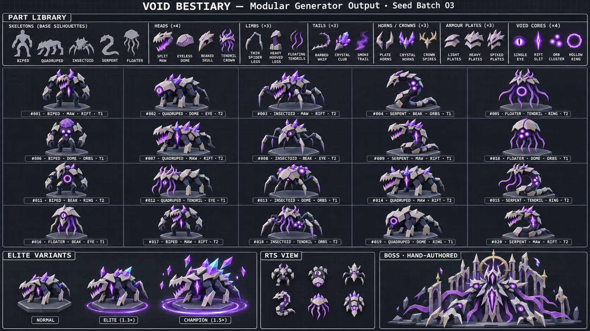
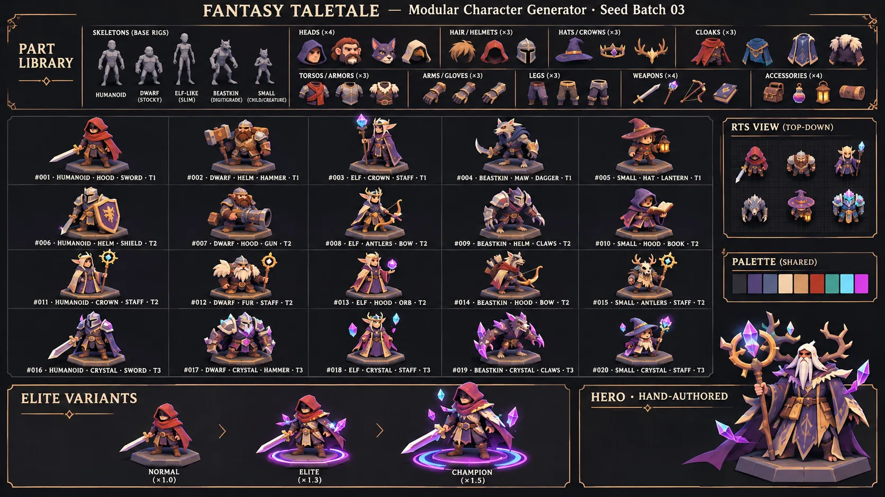
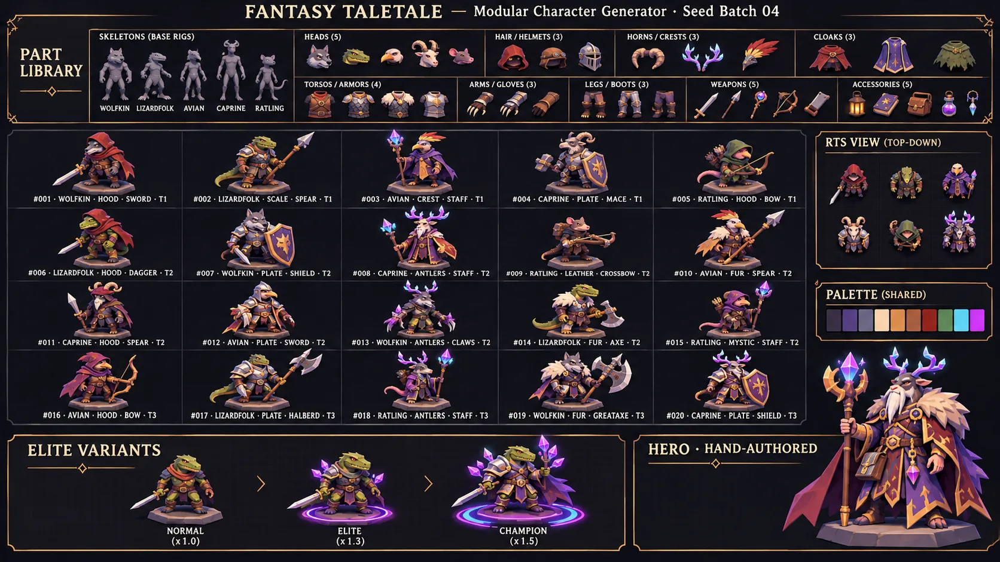

How to read this study
The study has four parts. Part I covers the shared foundations used by both projects. Part II covers pixel characters and townsfolk for Asterion Online. Part III covers 3D creatures for the Hero Defense RTS. Part IV holds the appendices: open-source gems, anti-patterns, a game index, open questions, a roadmap and sources.
Each technique gets a profile in a fixed format: plain-words summary, technical mechanics, cost, games that used it (with links), how it feels in our genre, risks, and 1–5 ratings. The ratings are the author's judgement on five criteria:
- Simplicity: how easy it is to build and understand.
- Perceived variety: how different the results look to a player.
- Cohesion: how well results stay in one consistent style.
- Production cheapness: how little art and engineering time it costs.
- Designer control: how precisely a designer can steer the output.
Evidence tags. Every substantive claim carries one of these:
| Tag | Meaning |
|---|---|
| V | Verified from a source the research team actually read (URL in the text or in Sources). |
| I | Author inference: design reasoning, arithmetic or estimates. Not stated by a source. |
| U | Unverified or commonly repeated: recalled, seen only in a search snippet, or from a source that could not be opened. Check before relying on it. |
| K | Established textbook or canonical-paper knowledge, with its reference given. |
Figures from vendors, marketing or publishers are marked (vendor) or (marketing) even when the page was read, because a page can be read accurately and still make a promotional claim.
A note on terminology
The user's name for this idea is "composition design". The concept is real and old, but that name is not established. The study uses these terms:
- Morphological analysis / Zwicky box (design theory). Astrophysicist Fritz Zwicky's method puts parameters in columns and options in cells below them; one cell per column makes one configuration V (northstar.greyb.com ↗). The step that removes impossible pairs is called cross-consistency assessment V.
- Modular (compositional) procedural generation (game development). Code assembles content from authored parts according to rules. The PCG textbook files the formal version under grammar-based and constraint-based methods K: Shaker, Togelius & Nelson, Procedural Content Generation in Games, Springer 2016.
- Paper doll (2D). Separate sprite sheets (body, hair, clothing) share one frame layout and are stacked at draw time I; the term is common practice, and no authoritative definition was fetched.
- Kitbashing (3D and model making). Building a new model from pieces of existing kits. The term spread through the model work on Thunderbirds, Star Trek, 2001 and Star Wars V (en.wikipedia.org ↗).
- The "Random Animal Generator" the user saw belongs to a family of art-block drawing tools such as "RAG" on itch.io, which generates "a randomised creature body part by body part" V (tuimiz.itch.io ↗). The specific generator the user saw was not identified U.
In short: "modular (compositional) procedural character generation, which is a Zwicky-box approach".
I.1 From a drawing prompt to a generator
The Random Animal Generator is a table of slots: Base, Head, Ears, Eyes, Nose, Legs, Feet, Tail, Coat, Colour and Extra. A button picks one entry per slot, and an artist then turns the mismatched list into one creature that looks like it could exist. A game generator has to do both of those jobs in code:
- Combination: pick one option per slot. This is the Zwicky box. Zwicky's own teaching example, 3×3×2×2×2, already yields 72 configurations V (northstar.greyb.com ↗). The user's 11 slots with 6 options each give 6¹¹ ≈ 363 million I. Large numbers are cheap.
- Integration: remove combinations that cannot work, and make the rest look like one design. Zwicky's method has a step for the first half, cross-consistency assessment, which crosses out incompatible pairs. The source calls it "a garbage detector" that can shrink the box by 90%, and by 99% on some problems V. The second half is the artist's eye. In code it becomes a shared palette, a shared shape language, scale rules and attachment sockets I.
Most of this study is about the second job. That is where every successful system spends its effort.
The Random Animal Generator, as code: combination plus integration
Click any cell to pick it by hand. ⚲ locks a row, so a roll keeps it. Hatched cells are crossed out by a cross-consistency rule.
Eleven slots with six options each is the user's table: 6¹¹ ≈ 363 million combinations. Picking is the easy half (the Zwicky box). The drawing does the second half, integration: one shared palette with hue-shifted shadows, one outline weight, one light direction, and legs that always reach the ground. Turn the rules off to see what cross-consistency removes. The recipe string rebuilds this exact creature; the same seed always gives the same roll. The slot options are illustrative.
How fast the box explodes, and how much a garbage detector removes
Each step to the right is ×10. Every marker is a number from the study; the moving pin is your table. Zwicky's cross-consistency step "can shrink the box by 90%, and by 99% on some problems". Even at 99%, eleven six-option slots leave millions. Large numbers are cheap; Borderlands' figures are marketing, and its own developer said "it doesn't matter how big the number is".
I.2 Generations: from paper tables to generative AI
Over time the field moved from "more combinations" to "more meaning per combination" I.
| Generation | Example | What it added | Numbers | Source |
|---|---|---|---|---|
| Paper tables | D&D 1e DMG tables (1979); Rogue (1980) | Roll per column; content from rules | — | U not fetched |
| Seeds, not content | Elite (1984) | Three 16-bit seeds per system, "twisted" to get the next | 8 × 256 = 2,048 systems | V See it in action ↗ |
| Affix grammar | Diablo (1996) | Max one prefix + one suffix; "Prefix Base of Suffix" | 2 slots | V See it in action ↗ |
| Part hybrids in an RTS | Impossible Creatures (2003) | Two animals combined by body region; parts carry abilities | 76 animals (51 base); armies of 9 types | V See it in action ↗ |
| Part editor + procedural animation | Spore (2008) | Parts on a spine; animation retargeted to any body | >1M creatures by 24 Jun 2008, >3M at launch (press figures) | V See it in action ↗ |
| Template + tweaks + material + text | Dwarf Fortress beasts (2006→) | Profile → body → tweaks → attack → material; forbid flags; generated descriptions | 324 profiles, ~14 bodies, ~22 materials | V See it in action ↗ |
| Part pools at marketing scale | Borderlands (2009→) | Manufacturer part pools; rarer guns get more parts | 17.75M → 1B → 30B (marketing) | V See it in action ↗ ; See it in action ↗ |
| Mutations as visible slots | Caves of Qud (2010→2024) | Mutations on level-up; history from replacement grammars | >70 mutations | V See it in action ↗ |
| One master rig, all parts | No Man's Sky (2016) | Base model holds every part; picks continue until a valid creature exists | Not published | V See it in action ↗ |
| Appearance as a string | Bannerlord, CK3 (2020) | BodyProperties key; dna= genes inherited by children | — | V See it in action ↗ ; See it in action ↗ |
| People with stories | Wildermyth (2019/2021) | Random heroes gain traits, relationships and visible transformations; "alternates layers of handcrafted and procedural content" | Team of 6 | V See it in action ↗ |
| Generative AI | PixelLab, Retro Diffusion, TRELLIS.2, PartCrafter, LLM NPCs | Content synthesised from prompts or images, not assembled from authored parts | See §I.7 | V |
What each generation teaches I:
- Elite, Bannerlord, CK3: store the recipe, not the asset. Tibia does the same (Part II).
- Diablo: a naming grammar makes each roll readable. "Frenzied Bog Horror of Venom" tells you what you are fighting.
- Impossible Creatures: hybrids read well at RTS zoom, but parts must matter tactically (Part III).
- Spore: animation is the hard part. Even after years of work, about 10% of creature–animation pairs failed V.
- Dwarf Fortress: the whole pipeline in text form. One letter and a colour become "A gigantic snail composed of grime and filth" V, and the description sells it.
- Borderlands: a Gearbox developer said "it doesn't matter how big the number is" V. The transferable idea is that rarer items get more parts.
- No Man's Sky: the cheapest 3D pipeline, and the best-known "mongrel" warning.
- Wildermyth: characters are remembered for events, not slot rolls.
Generations: from more combinations to more meaning per combination
Click an era (or use Tab and Enter). Each card pairs what that generation added with the lesson the study draws from it.
I.3 The shared building blocks
Every system reviewed mixes the same seven ingredients V for the examples; I for the grouping. Quality comes mostly from the last four.
- Slot taxonomy.
- Examples: DF uses body → tweaks → attack → material; Tibia uses outfit → 4 colours → 2 addons → mount; Impossible Creatures uses head, torso, front legs, back legs, tail, wings V.
- Rule: choose slots by what the player can see and act on at game scale, not by anatomy I.
- Weighted option pools. RimWorld weights traits by "commonality" (Night owl 1.3, Undergrounder 0.2). Borderlands' rarity sets how many parts a gun gets. Sources disagree on No Man's Sky: Kotaku reports near-equal odds, Game Developer reports preset probabilities V.
- Seeded deterministic RNG. Elite rebuilds 2,048 systems from three numbers V. An MMO or networked RTS should send a seed or recipe, never the asset. Ship your own small PRNG (PCG32, sfc32, mulberry32) I. Godot's own docs say its RNG "currently uses PCG32" and "should not be depended upon" V (
RandomNumberGenerator.xmlin github.com/godotengine/godot ↗). Avoid float-based weighted picks, which can drift across platforms I. - Compatibility rules.
- Examples: Zwicky's cross-consistency step; DF flags (no shelled slugs, no wereblobs); No Man's Sky's "valid critter" loop; RimWorld's conflict lists (Ascetic vs Greedy) V.
- In code these become tags plus forbid/require rules I.
- Hierarchy: archetype → parts. DF chooses profile → body → tweaks. No Man's Sky chooses blueprint → descriptors. A RimWorld backstory forces or forbids traits and sets body type V. The archetype is where designer intent lives I.
- Grammars for text.
- Tracery expands nested symbols such as
#firstName# #surname#and values additive authoring K: Compton, Kybartas & Mateas, ICIDS 2015, publications.graphics.tudelft.nl ↗. - Caves of Qud generates events first and then rationalises them with replacement grammars V (gdcvault.com ↗).
- Tracery expands nested symbols such as
- Cohesion through shared constraints I:
- a limited set of hand-made colour ramps;
- a shape language per race or faction (round shells for the nautilus folk, spiky chitin for an insect wave);
- scale rules relative to the base body;
- one frame layout or one skeleton for all parts;
- forbid tags.
I.4 The "10,000 bowls of oatmeal" problem
Kate Compton coined the "ten thousand bowls of oatmeal problem". You can generate ten thousand bowls, each with a unique arrangement of oats, and players will still see only oatmeal. A million mathematically unique objects do not matter if players cannot tell them apart V (Game Developer write-up of "Practical Procedural Generation for Everyone", 2017: gamedeveloper.com ↗). Her test for a memorable generated object is whether you would write fan fiction about it V. "Perceptual differentiation" is common shorthand for the idea; it is not her wording in that article V. Her 2016 essay "So you want to build a generator" could not be opened U.
Rabii & Cook formalise this. They link a generator's code length, meaning the designer knowledge it encodes, to its output space and its most complex artefact. Random part-mixing grows the space cheaply but adds little control, which is why oatmeal is cheap K: "Why Oatmeal is Cheap", FDG 2023, ar5iv.labs.arxiv.org ↗. They also note that a small space can suit pixel art, and that dense or confusing patterns (Spelunky) slow players' recognition of templates V.
Implications for both projects I:
- Spend variety where perception is. At 32×32, players read silhouette, the 2–3 largest colour blocks and one prop. At RTS zoom they read outline, size, colour and motion.
- Add rules, not slots. "A blacksmith always carries a hammer and a soot-dark apron" does more than ten extra hats.
- Make variation mean something. Diablo's tinted champions work because the colour signals danger. Talk of the Town NPCs gossip about hair and eye colour because those features are the most salient V.
In a Tibia-like town, oatmeal looks like twelve fishmongers who differ only in shirt hue, so the player stops looking at NPCs at all. In a WC3-like wave, it looks like a "new" mob that turns out to be the old one with a different horn. The fix is the same in both: a few bold axes (silhouette, colour role, prop, verb) carry the difference, and the subtle differences go into text and behaviour I.
Ten thousand bowls of oatmeal: where variation is spent decides whether anyone sees it
Sixty creatures, all mathematically unique. With only small features varying they read as one creature sixty times. Spend variation on silhouette and colour role and the same screen reads as a crowd. "Squint" approximates a far camera: the low-salience grid collapses completely.
I.5 Shared technique profiles
Both projects rest on these six techniques.
Weighted tables with caps and conflict listsa loot table for traits and parts. Some entries are common and some rare, a character can hold only a few, and some entries cancel each other out.
How it works
Each slot holds (option, weight, tags) entries. A pick walks the cumulative weight sum. On top of that:
- Caps limit how many entries a character holds. RimWorld allows 1–3 traits; Darkest Dungeon allows at most 5 positive and 5 negative quirks.
- Conflict lists remove clashing options.
- Spectrum entries are mutually exclusive levels on one axis.
- Rare rerolls keep rare results rare: RimWorld rerolls rare staff-written bios 50% of the time V.
Cost and performance
Negligible at runtime. The work is in tuning the weights.
Games that used it
RimWorld traits (See it in action ↗); Darkest Dungeon (See it in action ↗); Diablo affixes (See it in action ↗); Borderlands rarity → part count (See it in action ↗).
How it feels in our genre
RimWorld players narrate around two or three readable labels ("the pyromaniac and the teetotaller"). In a Tibia-like town, weights are why most fishers look and act like fishers while one in twenty has a jarring quirk. In a WC3-like wave, the same table makes one mob in ten an elite I.
Risks
Uniform weights give oatmeal or chaos. Weights can interact in surprising ways; Smith & Whitehead found an unintended stacking bias in their generator V. Without caps, everyone ends up weird.
Ratings 1–5, author judgement
A loot table for traits: weights, caps, conflicts and rare rerolls
Weights for Night owl (1.3) and Undergrounder (0.2), the 1–3 trait cap, the Ascetic/Greedy conflict and the 50% reroll of rare bios are RimWorld's, as cited in the study. The other weights and the "Strange bio" entry are illustrative. Switch off the conflict list to see clashing pairs slip through; switch to uniform weights to see the rare entries stop being rare.
Seeded deterministic RNG and compact recipesstore a short number or string that rebuilds the character exactly, instead of storing the character itself.
How it works
A seeded PRNG gives the same sequence every time. The generator consumes it in a fixed order (role → family → body → layers → palette → personality). The chosen ids can also be saved as a recipe. Shipped examples V:
- Elite's three 16-bit seeds per star system;
- Bannerlord's
BodyPropertieskey; - CK3's
dna=string; - Tibia's outfit id + 4 colour indices + addon bits.
For cross-platform stability, use your own small PRNG and integer-only weighted picks I. Engine RNGs can change between versions; Godot's documentation warns about exactly this V.
Cost and performance
Near zero. A recipe is a few bytes.
Games that used it
Elite (See it in action ↗); Bannerlord (See it in action ↗); CK3 (See it in action ↗); Tibia via OTClient (See it in action ↗).
How it feels in our genre
Invisible when it works. Every MMO player sees the same baker with the same chipped shell, and a bug report can carry the NPC's seed. Bannerlord and CK3 players even share appearance strings with each other I.
Risks
Changing the generation order or the tables silently changes every existing NPC. Version your generators, and store recipes for persistent characters I.
Ratings 1–5, author judgement
Send the seed, not the asset: same seed, same creature, on every machine
Server: own PRNG (mulberry32)
Client: same PRNG, same order
Elite rebuilt 2,048 star systems from three 16-bit seeds; Tibia, Bannerlord and CK3 store a short recipe. The drift toggle is illustrative: it swaps the client to a different generator, the failure Godot's docs warn about when they say its RNG "should not be depended upon". Ship your own small PRNG with integer-only picks.
Generative grammars (Tracery-style)fill-in-the-blank templates that nest inside each other, so "a [adjective] [job] from [place]" becomes thousands of sentences.
How it works
Named symbols have alternative expansions, and expansions can contain other symbols. Expansion repeats until only text remains K: Tracery, ICIDS 2015. Neighborly, an open-source settlement simulator, uses Tracery with seeding and JSON rules to name characters and businesses V (neighborly.readthedocs.io ↗). Authoring is additive: new rules add variety without breaking old ones V.
Cost and performance
Trivial.
Games that used it
Caves of Qud histories (See it in action ↗); Dwarf Fortress beast descriptions (See it in action ↗); Shadow of Mordor epithets such as "the Unkillable" (See it in action ↗).
How it feels in our genre
A forgotten beast is one coloured letter, yet its description makes players dread it. In Asterion, "Ilu Vel-Sorrow, net-mender, Twice-Drowned" turns a 32×32 sprite into a person. In the RTS, a wave name like "Frenzied Bog Horrors" sets expectations I.
Risks
Text with no mechanic behind it is forgotten; Tarn Adams reports that cosmetic "mannerisms" failed V. Repeated templates become recognisable.
Ratings 1–5, author judgement
A Tracery-style grammar: nested symbols become names, rumours and wave titles
Expansion of the first line:
Each #symbol# is replaced by one of its alternatives, recursively, until only text remains. Authoring is additive: a new line in any rule adds variety without breaking the old ones. "Ilu Vel-Sorrow, net-mender, Twice-Drowned" and "Frenzied Bog Horrors" are the study's own examples; the other word lists are illustrative.
Constraint solving: forbid tags, answer-set programming and WFCwrite down what must never (or must always) happen, and let the computer produce only legal combinations.
How it works
Three levels of strength:
- Tags with reject-and-reroll. Zwicky's cross-consistency step, written as code.
- Answer-set programming (ASP). Choice rules say what may exist, integrity constraints forbid bad combinations, and the Clingo solver enumerates valid outputs. Smith & Mateas built a 49-line generator that produced 10,000 unique 6×6 mazes in about 1 s. ASP cannot model aesthetics directly and has no floats K: Smith & Mateas, IEEE TCIAIG 3(3), 2011, course.ccs.neu.edu ↗.
- WFC. Local adjacency constraints, propagated until every cell is decided. Karth & Smith show WFC is a form of constraint solving K: FDG 2017, escholarship.org ↗.
Cost and performance
Tags cost nothing. ASP usually runs offline; Clingo is MIT-licensed V.
Games that used it
Dwarf Fortress creature flags (See it in action ↗); No Man's Sky's "valid critter" loop (See it in action ↗); RimWorld trait conflicts (See it in action ↗). No use of ASP or WFC for sprite characters was verified U.
How it feels in our genre
Players never see the rule. They simply never meet a priest with a fishing spear, or a hat clipping through a horn. A rule like "palette differs from both neighbours in the shop row" makes an Asterion market street read as distinct people I.
Risks
Over-constraining collapses variety. In Smith & Whitehead's study, one critic let only ~100 of 10,000 levels through V. WFC suits textures inside a part (robe trims, shell patterns) better than whole characters I.
Ratings 1–5, author judgement
Forbid tags as constraint propagation: never a priest with a fishing spear
Every pick removes the options it forbids from the other slots. When a slot has only one option left it is forced. This is Zwicky's cross-consistency step written as tags, and the same propagate-until-decided loop that WFC runs on tiles. The rules are illustrative, built from the study's examples ("a blacksmith always carries a hammer and a soot-dark apron").
Evolutionary and interactive selection ("mutant shopping")show a designer, or the game itself, a batch of variants; keep the good ones and breed more like them.
How it works
- Karl Sims evolved directed-graph genotypes of rigid parts, with recursion giving segments and reflection giving symmetry. Population ~300, 50–100 generations, about 3 h on a 32-processor CM-5 K: Sims, SIGGRAPH '94, course.ccs.neu.edu ↗.
- Interactive evolution: Picbreeder K: Secretan et al., Evolutionary Computation 19(3), 2011 and EndlessForms V (news.cornell.edu ↗). Compton & Mateas name "mutant shopping" and the "chorus line" as patterns drawn from Spore K: "Casual Creators", ICCC 2015, computationalcreativity.net ↗.
- Implicit fitness from play: in Galactic Arms Race, firing a weapon raises its fitness. New drops are 80% offspring, 10% pool, 10% random. By July 2009, 379,081 weapons had evolved and 98.5% of kills used evolved weapons. There was no controlled preference study K: Hastings, Guha & Stanley, IEEE TCIAIG 2009, course.ccs.neu.edu ↗.
Cost and performance
Cheap as an art tool. As a runtime system it needs telemetry and guard rails.
Games that used it
Galactic Arms Race (See it in action ↗); Spore's internal chorus-line testing (See it in action ↗).
How it feels in our genre
An artist sees nine nautilus townsfolk, clicks the two that "feel like Asterion", and gets nine more in that direction. At 32 px a human eye is the best judge. In the RTS, a horde could slowly breed toward the variants players struggle with I.
Risks
Without rules, evolution drifts into ugliness. Keep it on meaningful, high-level parameters (Spore's "modifying the meaningful") K.
Ratings 1–5, author judgement
Mutant shopping: click the ones that feel right, breed nine more
Select one to three parents. Each child takes every slot from a random parent and mutates it at the chosen rate. Within a few generations the batch converges on a "family". Compton and Mateas name this pattern after Spore; keeping it on high-level slots is Spore's "modifying the meaningful".
Generative AI as a part-library helperuse AI offline to draft parts (hair layers, outfits, monster heads), clean them by hand, and feed them to your own assembler.
How it works
Pixel tools and image-to-3D models produce drafts. Each draft then passes a lock:
- 2D: palette quantisation and grid snapping.
- 3D: retopology, sockets and weight transfer.
Only after the lock does a part join the library (§I.7) I.
Cost and performance
Offline only. Pixel tools cost about $10–50/month or a one-time $20/$65 local licence (Retro Diffusion), per third-party pricing V. TRELLIS.2 needs a ≥24 GB NVIDIA GPU V.
Games that used it
No shipped game was found that uses part-aware generation for a modular library. LLM NPC chat has shipped in Where Winds Meet (See it in action ↗) and inZOI (See it in action ↗, third-party) V.
How it feels in our genre
Done well, it is invisible, because your compositor enforces palette and outline. Done badly, players see "boiling" frames, colour drift and off-grid pixels, and a nostalgic pixel-art audience notices fast I.
Risks
Licences, backlash, disclosure duties, and cleanup time that is usually underestimated (§I.7).
Ratings 1–5, author judgement
I.6 Evaluating generators: is the output oatmeal?
Expressive range analysis is the standard research tool K: Smith & Whitehead, PCGames 2010, pcgworkshop.com ↗:
- Generate thousands of outputs (they used 10,000 levels).
- Score each on 2+ designer-meaningful metrics (they used linearity and leniency).
- Plot a 2D hex-binned heatmap. Clusters show over-production; holes show what the generator cannot make.
Their plots exposed biases nobody intended V. Summerville later broadened the methodology K: AIIDE 2018; details not verified.
Applied to characters (proposals; no sprite-specific study was found) I:
| Check | Pixel town (Asterion) | RTS waves |
|---|---|---|
| Expressive-range heatmap over ~10,000 samples | Silhouette difference (alpha IoU vs base), hue entropy, personality spread | Silhouette area, bounding-box ratio, dominant hue, verb count |
| Nearest-neighbour test: flag pairs that are too close in perceptual features, then reroll | 8×8 silhouette, 3 dominant colours, headwear and prop ids | Silhouette at camera height, size class, tint |
| Thumbnail grid ("chorus line") | The whole town at 1× and 50% | One wave at camera height, plus greyscale shots |
| Typicality / quality / novelty | Still reads as Asterion townsfolk? | Still reads as this faction? |
The last row follows the structure of Ritchie's creativity criteria, which are commonly summarised as typicality, quality and novelty relative to an "inspiring set". Only the paper's metadata was confirmed U: Minds and Machines 17(1), 2007, aura.abdn.ac.uk ↗.
The chorus line is the cheapest and most useful check. Spore's team tested animations on many creatures at once K: Casual Creators. A single screen of 64 outputs with accept/reject buttons gives a solo developer most of the value I. No validated "perceptual distinctness" metric for pixel characters exists, so thresholds have to be tuned by eye V: absence.
Expressive range: render thousands, measure two things, look for clusters and holes
Each sample is drawn off-screen at 96×72 and measured: silhouette area (filled pixels) and bounding-box ratio (width ÷ height). These are the RTS-wave metrics the study proposes.
Smith and Whitehead plotted 10,000 levels on two metrics as a heat map; clusters show over-production, holes show what the generator cannot make. This plate does the same live with 2,000 creatures. Push a weight and watch the mass move: weights interact in ways that are hard to predict from the table.
The chorus line: one screen, accept or reject, and a nearest-neighbour check
Red outlines mark pairs that share at least four of five salient features (body, legs, extra, tail, colour). rerollNearDuplicates replaces one of each pair. Accepted recipes are what Stage 0 of the roadmap exports. The study calls this the cheapest and most useful check.
I.7 Generative AI: an honest viability check
The research supports the user's decision to keep a procedural core with AI as a secondary layer. AI helps offline, to fill part libraries and write text. It is not ready for runtime character generation in either project I.
Pixel art.
- Grid output. PixelLab, Retro Diffusion, Sprixen and Sprite-AI output on a true pixel grid. Scenario, Layer, Ludo and Leonardo usually need a downscale pass (Cinevva, Sep 2026; Cinevva sells competing tools) V, third-party (app.cinevva.com ↗).
- PixelLab offers 4- or 8-direction characters with walk, run, idle and attack animations, an Aseprite extension and API sizes of ~16–256 px V, lead-verified (pixellab.ai ↗). "3,000+ indie devs" is vendor marketing.
- Retro Diffusion accepts a palette image to restrict colours and makes 4-direction walks with low frame counts V (help.scenario.com ↗).
- Typical failures: half-tones, anti-aliasing, near-duplicate shades, uneven outlines, and drift in an animation's second frame. Diffusion works in a continuous space, not on a grid V (dev.to ↗). The open-source
unfakealigns output to the grid and quantises colours V. - Research: sprite ML is small-data. Its best results are completing missing directions of an existing character, and they work best when sprites share reusable body parts K: Coutinho & Chaimowicz, SBGames 2022, arxiv.org ↗; 2024, arxiv.org ↗. Shading was inconsistent across frames K: Serpa & Rodrigues, SBGames 2019. Props went missing, for example a gun K: Sprite Sheet Diffusion, arXiv 2412.03685.
- Verdict for Asterion I: generate layers, not NPCs. Quantise to the master palette and hand-fix outlines. Expect cleanup in minutes per layer, not seconds.
Image-to-3D V unless marked:
| Model | Licence | Notes |
|---|---|---|
| TRELLIS.2 (Microsoft, Dec 2025, 4B) | MIT | GLB with PBR; 512³–1536³ grid; ~3/17/60 s on an H100 (secondary figure); ≥24 GB VRAM. github.com/microsoft/TRELLIS.2 ↗ ; timing: app.cinevva.com ↗ |
| Hunyuan3D 2.x | Territory excludes EU, UK, South Korea; >1M MAU needs a separate licence; outputs may not train other models | huggingface.co ↗ |
| Tripo P2.0 (Sep 2026) | SaaS | "First" native quads (vendor); quad ≤25K faces |
| Rodin Gen-2 (Oct 2025) | SaaS/API | Quad presets 4K/8K/18K/50K; no bones |
| Meshy 7.1 | SaaS | Quads, creature symmetry, optional auto-rig [third-party] |
| Stable Fast 3D | Free under $1M revenue | <1 s (vendor); low-poly, weak topology |
One April 2026 roundup claims TRELLIS.2 outputs Gaussian splats. That contradicts the documented GLB output, so the roundup is treated as unreliable V. For WC3-like budgets, 4K–18K-face quad presets fit far better than 500K-face raw meshes I.
Auto-rigging.
- Meshy: the "Smart Rig (Beta)" for non-standard bodies cannot use the animation library V.
- UniRig (MIT): skinning degrades when tail or wing bones are missed V.
- Anything World: decimates models above 20K vertices (2024 terms) V.
- Recommendation: keep your own skeleton per body plan and use AI rigs only as weight drafts I.
Part-aware 3D.
- PartCrafter (NeurIPS 2025): up to 8 separate parts in ~34 s on an H20 V.
- OmniPart: mask-steerable, ~0.75 min V.
- Hunyuan3D-Part: P3-SAM segmentation V.
- None of these maps parts onto your socket scheme. The practical path is to generate a whole creature, split it, and place sockets by hand I.
LLMs for NPC identity.
- Cost: batch writing is cheap. At third-party-reported Haiku 4.5 Batch rates ($0.50/$2.50 per M tokens), ~1.5K in + ~800 out ≈ $0.003 per NPC, so ~$0.60 for a 200-NPC town V price / I arithmetic.
- Safe pattern: procedural code decides the facts, the LLM only writes prose, and output is validated against a schema and lore checklist, then frozen I.
- Runtime chat has shipped in contained form. In Where Winds Meet, side NPCs chat with output limited to text and fixed flags. Players steered them off script V (pcgamesn.com ↗), and headlines report reward exploits U. Replies under ~800 ms feel conversational, while cloud round trips add 1–2 s V, third-party.
Licences and reception.
- Hunyuan: Peru is inside its territory. The risk starts if a partner is in the EU, UK or South Korea, or above 1M MAU V/I; not legal advice.
- Steam: the Jan 2026 rules require disclosure of shipped and live-generated AI content; efficiency tools are exempt V (videogameschronicle.com ↗).
- Awards: the Indie Game Awards rescinded Clair Obscur's awards over placeholder AI textures V (comicsbeat.com ↗).
- Players: Arc Raiders faced boycott calls over AI voices V (gfinityesports.com ↗).
- For a nostalgia-driven Tibia audience I: present AI as hand-finished drafts, disclose honestly, and keep provenance records. Procedural composition itself is not gen-AI.
Viability matrix I:
| Use | Offline helper | Runtime |
|---|---|---|
| 32×32 NPC layers | Viable with palette lock + cleanup | Not viable |
| 3D mob/boss meshes | Viable for drafts; bosses need retopo/rig | Not viable |
| Part libraries via part-aware models | Experimental | Not viable |
| Non-humanoid rigging | Partial | Not viable |
| NPC bios, barks | Highly viable (~$0.003/NPC) | Possible but risky |
Gen-AI viability: offline helper, not runtime generator
Batch LLM bios
Image-to-3D licences
The matrix is the study's own (author inference). The cost line uses its estimate of about $0.003 per NPC (~1.5K tokens in, ~800 out at third-party-reported batch rates), when code decides the facts and the model only writes prose.
I.8 Part I scorecard and shared architecture
| Technique | Simplicity | Perceived variety | Cohesion | Production cheapness | Designer control |
|---|---|---|---|---|---|
| Weighted tables + caps + conflicts | 5 | 3 | 3 | 5 | 4 |
| Seeded RNG + compact recipes | 4 | 1 (enabler) | 3 | 5 | 4 |
| Generative grammars | 4 | 4 | 4 | 5 | 5 |
| Constraint solving (tags / ASP / WFC) | 3 | 3 | 5 | 4 | 5 |
| Evolutionary / interactive selection | 3 | 4 | 3 | 4 | 3 |
| Gen-AI as part-library helper | 2 | 4 | 2 | 3 | 2 |
(All ratings are author judgement.)
Shared loop: generate → constrain → measure → curate I. The two projects plug different tables, rules and renderers into the same loop.
function generate(seed, archetypeId, context):
rng = MyPCG32(seed) # own PRNG, integer-only picks
arch = ARCHETYPES[archetypeId] # template = designer intent
recipe = { archetype: archetypeId, seed: seed, slots: {} }
for slot in arch.slotOrder: # fixed order = reproducible
pool = arch.pools[slot].filter(o -> all(rule(o, recipe, context) for rule in FORBID_RULES))
recipe.slots[slot] = weightedPick(rng, pool) # weights, caps, conflicts
return recipe
function buildBatch(n, archetypeId, context):
batch = [generate(seedFor(i), archetypeId, context) for i in 0..n-1]
batch = rerollNearDuplicates(batch, perceptualFeatures, threshold) # oatmeal check
return batch # then: chorus-line review by a humanThe shared loop: generate, constrain, measure, curate
Both projects plug different tables, rules and renderers into this one loop. Click a stage. The counts on the arrows are illustrative: they only show that each stage throws work away, and that the human at the end sees a manageable screen.
II.1 The target and what it implies
Asterion Online is a Tibia-inspired MMORPG: a medieval space opera with a nautilus alien race and classless skill-by-use progression. It uses a top-down/three-quarter camera, sprites of about 32×32 and 4-direction walk cycles. The generator has to cover race, skin, hair, eyes, face, size, weight and clothes, and it has to fill whole towns with NPCs who look different but share one style, each with perks and a personality.
Three facts shape everything that follows I:
- At 32×32 most of the user's slots are invisible. Eyes, nose and face shape are one or two pixels each. What a player can actually see is the silhouette, 3–4 colour blocks, headgear or hair mass, and one held item.
- An MMO needs compact recipes. The server should send a few bytes per NPC, never an image.
- The audience values hand-made pixel art. The generator should combine hand-drawn parts, not invent pixels.
II.2 The baseline: how Tibia builds "different but similar" crowds
The open-source OTClient renderer shows exactly how Tibia does it V:
- Each outfit has a base sprite that is already shaded.
- A template sprite paints four regions in flat yellow, red, green and blue.
- The client draws the base, switches to Multiply blending, and draws the template once per region. The head colour tints yellow, body tints red, legs tint green and feet tint blue. In memory each outfit is 5 texture layers: the base plus four masks.
Sources: github.com/edubart/otclient ↗ ; github.com/edubart/otclient ↗
Palette V. HSI_H_STEPS = 19 × HSI_SI_VALUES = 7 = 133 colours. Indices divisible by 19 form a grey column; each of the other 18 hues comes in 7 saturation/intensity rows (github.com/edubart/otclient ↗).
Sprite axes V:
- patternX = direction: 4 directions; diagonals collapse to east/west.
- patternY = addon: each outfit has 2 addons, which can be worn singly or together (tibia.fandom.com ↗).
- patternZ = mounted: the mount is drawn first with its own offset, and the rider uses a riding pose.
- Size: tiles are 32 px; large creatures span 2×2 tiles.
- Walk frames: phase 0 stands and phases 1..N−1 loop while walking. The phase count is set per outfit V. Tibia's actual counts were not verified U.
History V:
- Outfits arrived in update 7.0 (28 Aug 2002) and addons in 7.8 (1 Aug 2006) (tibiaqa.com ↗).
- Colourisable mounts, starting with the Krakoloss, arrived in 12.60 (Winter 2020) (tibiaqa.com ↗). Whether mounts use the same 4-region scheme is U.
What it adds up to I:
- Content cost is outfits × directions × frames × (base + template), and colours come free.
- That gives 133⁴ ≈ 3.1 × 10⁸ colourings per outfit, times 4 addon states.
- An NPC is fully described by
(looktype, head, body, legs, feet, addonBits, mount?). The open-source Canary server uses this exact data model V (github.com/opentibiabr/canary ↗). - Shading lives in the base sprite, so any colour choice keeps the same outline and light direction. That is why the results look cohesive.
What a player sees in Tibia I. A depot crowd is a sea of a few dozen outfit shapes in every imaginable colour. Full addons signal "veteran", and colours signal taste or guild. What the crowd lacks is body variety: everyone has the same height and build.
Licence. OTClient is MIT. Tibia's sprites belong to CipSoft: draw your own bases and masks V/I.
Template masks: one shaded base, four flat regions, multiply
Pick a region above, then a colour. illustrative palette, not Tibia's 133-colour table (same 19 × 7 shape: a grey column plus 18 hues in 7 rows).
The client draws the shaded base, switches to multiply, and draws the template once per region: head tints yellow, body red, legs green, feet blue. Colours cost no art, which is why a Tibia depot crowd is a few dozen outfit shapes in every colour. The sprite is an original code-drawn stand-in; never ship CipSoft art.
Template masks with multiply tint (the Tibia method)draw each outfit once with shading, mark which pixels are "shirt", "trousers" and so on, and let the game paint those regions in any colour.
How it works
The base sprite carries the shading and outline. The template marks up to 4 regions. For each masked pixel, out = base × tint. Unity's SpriteRenderer.color applies the same multiply idea to a whole sprite I.
Cost and performance
One extra template per frame. OTClient uses 5 draws per creature; a combined shader could use 1 V/I.
Games that used it
Tibia via OTClient (See it in action ↗); colourisable mounts (See it in action ↗).
How it feels in our genre
Instant, legible identity at 32 px ("the guard in red and gold"). It also produces Tibia's slightly murky darks: multiply can only darken, and only the black outline saves dark tints from turning to mud I.
Risks
Multiply cannot brighten or hue-shift shadows, and masked regions must be authored very light I.
Ratings 1–5, author judgement
II.3 Paper-doll layering and z-order per direction
Every shipped paper doll that was verified does three things V examples / I synthesis:
- Shared cells. All layers use identical sheet layouts and frame cells.
- Mirroring. Mirroring cuts the drawn directions from 4 to 3.
- Split wrap-around items. Items that wrap around the body are split into foreground and background layers, so no per-direction sorting code is needed.
Shipped examples:
- Stardew Valley V (stardewvalleywiki.com ↗).
- 16×32 frames; down, up and right are drawn, and left is mirrored.
- 7 layers, bottom to top: body → pants → shirt → accessories → hair → hat → arms.
- Shirts are 8×8 and shifted per frame.
- Skin, eye and clothing colours are found by exact pixel colour and recoloured.
- RimWorld V (rimworldwiki.com ↗).
- 6 apparel layers.
- Outer draws above all others, even though mechanically it sits below the belt and headgear. Draw order and gameplay layering are separate concerns.
- Headwear needs south, north and east textures; west mirrors east.
- Universal LPC V (github.com/LiberatedPixelCup/Universal-LPC-Spritesheet-Character-Generator ↗).
- The z table has ~888 rows; the body sits at 10.
- A solid cape is split into a foreground layer at 85 and a background layer at 5.
- One long-bangs hairstyle has its foreground at 120 and its background at 9.
- Terraria reportedly splits a player across "up to 80 or so" image files (wiki talk page) U.
Work formula I: frames = Σ_layers variants × body_types × directions_drawn × Σ_anims frames.
- Mirroring cuts
directions_drawnfrom 4 to 3. - Palette swapping stops colours from multiplying
variants.
Paper doll, exploded: shared cells, z-order, a cape split front and back
Every layer uses the same 32×32 cell, so composition is just "draw each layer in z-order into the same cell". The cape is two layers: its back half (z 5) sits under everything when the character faces you, its front half (z 85) covers the body when they face away. No per-direction sorting code is needed: LPC splits a solid cape the same way at 5 and 85.
The work formula: why every body type multiplies the wardrobe
frames = Σ layers variants × body_types × directions_drawn × Σ anims frames. Mirroring cuts drawn directions from 4 to 3; palette swapping stops colours from multiplying variants (turn it off to see). The study's example: 30 garments × 5 bodies × 3 directions × 5 frames = 2,250 frames against 450 for a single body. Bars are on a log scale. Minutes per frame are the study's 32×32 estimate.
II.4 Colour: multiply tint, indexed palettes and ramps
| Technique | How | Shipped example | Strength | Weakness |
|---|---|---|---|---|
| Multiply tint | base × tint over a mask | Tibia | Cheapest | Darkens only; no hue-shifted shadows I |
| Exact-colour replacement | Swap pixels of an exact colour | Stardew | Keeps hand-picked shades | Fragile if source colours collide |
| Channel masks | Red = primary, green = secondary; darker red = partial (#BB0000 ≈ 75%) | RimWorld | Two colours, soft blends | Still a tint |
| Indexed palette lookup | Grey value is a palette index; a shader maps index → colour | Wargroove, LPC | Keeps hue-shifted ramps; unlimited palettes | Art must be authored as indices |
| Gradient map | Grey value → 1D ramp | (general technique) | Hue shift kept | Same grey in two regions can't differ I |
Wargroove (10 May 2017) V (wargroove.com ↗):
- At build time each asset becomes a greyscale image whose intensity stores "the index of that pixel in the palette".
- A shader maps the indices across 3 ranges: faction colour, skin tone and fixed colours.
- New palettes cost "no extra work per unit" (developer claim).
LPC uses shader palette swapping with 1–32-colour palettes ordered shadow → highlight V (github.com/LiberatedPixelCup/Universal-LPC-Spritesheet-Character-Generator ↗).
Mana Seed ships ramps for 10 skin tones and 13 hair colours (vendor page) V.
Dwarf Fortress v50.13+ reads palette strips (LS_PALETTE), and clothing can take its colour from the item's dye V (catsplode.com ↗).
Why multiply looks muddy I. Hand-made pixel ramps hue-shift: shadows cooler, highlights warmer. An index lookup preserves that shift. Multiply keeps the base sprite's hue in the shadows and can never brighten.
Engine notes:
- Godot V (godotshaders.com ↗): one shader approach stores palette UVs in the R,G channels for a single lookup; another matches up to 5 colours with a 0.1 tolerance. The examples use Godot 3 syntax.
- Unity: Shader Graph with a LUT I.
- Web: PixiJS colour-map filters (MIT) V (github.com/pixijs/filters ↗).
- Authoring: Aseprite's indexed mode plus Lospec palettes V (lospec.com ↗).
Multiply tint against an indexed ramp: same sprite, same chosen hue
Multiply keeps one hue from highlight to shadow and can only darken, so darks go muddy. A hand-made ramp hue-shifts: cooler shadows, warmer highlights, and the index lookup preserves that. The degree labels show the drift: flat for multiply, a real swing for the ramp. Shell, outfit and headgear are recoloured; mantle, eyes and props stay fixed.
Indexed palette ramps (and channel-mask variants)draw every part "paint-by-numbers" and let a palette decide which real colours fill the numbers, so a new family colour scheme costs nothing to draw.
How it works
Parts are authored in an indexed palette with fixed ramp slots per region. For example: 4-colour ramps for shell/skin, cloth 1, cloth 2 and metal, plus fixed outline and eye colours. A shader or CPU bake maps each index to the chosen ramp. RimWorld-style R/G masks are a lighter variant for one or two regions V/I.
Cost and performance
One lookup per pixel at runtime, or zero if the sprite is baked. Per-NPC palette uniforms break batching unless the palette is passed per vertex or per instance I.
Games that used it
Wargroove (See it in action ↗); LPC (See it in action ↗); RimWorld masks (See it in action ↗); Dwarf Fortress palette strips (See it in action ↗).
How it feels in our genre
The town looks painted. A teal fisher's coat has cool shadows and a warm highlight, and a rust-shelled elder looks lit by the same sun as everyone else. After an hour in town, the player notices that "the Vel-Sorrows all have banded amber shells" without being told I.
Risks
Index collisions; ramps that clash with the environment palette; per-NPC uniforms breaking batching I.
Ratings 1–5, author judgement
II.5 Resolution deep-dive: how complex is it at 16, 32, 64 and 128?
Short answer I: complexity grows faster than the canvas. Pixels per frame grow 4× with each doubling. Effort per frame grows somewhere between the outline (~2×) and the area (~4×). Bigger sprites also invite more frames and more visible slots, and every visible slot multiplies the part catalogue. 32×32 is the sweet spot for Asterion.
What the sources say V:
- Choose resolution by the "smallest necessary detail", usually the eyes, and if in doubt go smaller (pixelparmesan.com ↗).
- An animated 64×64 icon "can cost more time than a larger static sprite", because frame count drives cost (community.aseprite.org ↗).
- The only per-frame time figure found is an informal 2013 forum estimate for 64×64 humanoids V, community (lpc.opengameart.org ↗):
- 15 minutes to 1 hour per frame, with ~60 unique frames for 4 animations: about 20 h, or ≈$300 at $15/h.
- Another commenter guessed 6–8 h for a whole character.
- Reference sizes:
- Tibia: 32-px tiles.
- Stardew: 16×32.
- Mana Seed: a ~32-px character in a 64×64 cell, with 6 walk frames.
- LPC: 64×64 frames, with an 8-frame walk + 1 stand.
- RimWorld: 64 px per tile, with 128 common in mods.
The resolution table (effort figures are estimates I):
| 16×16 | 32×32 (Asterion) | 64×64 | 128×128 | |
|---|---|---|---|---|
| Pixels per frame | 256 | 1,024 | 4,096 | 16,384 |
| What reads | Silhouette, 1–2 colour regions; eyes 1 px or absent | Head vs body, hair mass, 1-px eyes, 3–4 colour regions, a held item | Faces (2-px eyes, brows), hands, layered clothing, beards | Portrait-level folds, expression, materials |
| Useful generator slots | Body colour, hat/hair silhouette, 2–3 palette regions | Outfit, 4 colour regions, 2 addons, headgear, held item | + eyes, face shape, hair style, clothing layers, body types | Nearly every slot in the user's table |
| Walk frames per direction | Short (2–4) | Short (1 stand + a few) | 6–8 (Mana Seed 6, LPC 8+1) | Usually more |
| Relative art cost per frame | 1× | ~2–3× | ~6–10× | ~20–40× |
| Effort per outfit variant (3 directions, idle + walk) | Under 1 h | ~1–5 h (9–15 frames at ~5–20 min) | ~6–20 h (LPC-forum range) | Days |
| Value of a face/eye slot | None | Very low | Real | High |
| Main generator risk | Oatmeal | Balanced | Catalogue explosion | Explosion + cleanup |
Rabii & Cook add a useful counterpoint: a deliberately small space can suit pixel art. The Tea Garden designer moved from 12×12 to 6×6 flowers V.
How each size feels I:
- 16×16: iconic, like an early console RPG town. Every NPC is "a red one" or "a hatted one", so variety must come from palette and behaviour.
- 32×32: the Tibia look. A smith is told from a priest by prop and apron, and families by colour. Faces are only suggestions. This is where the paper doll gives the most variety per unit of art.
- 64×64: NPCs become readable characters, with a frown, a beard or a scar. It is also where a solo developer drowns, because every hat must be drawn across many more frames and bodies.
- 128×128: portrait territory. Use it for dialogue, not for a walking town of 60.
The Dwarf Fortress move V/I. Dwarf Fortress pairs 32-px map sprites with 96×96 layered portraits shown in adventure mode and on creature sheets (dwarffortresswiki.org ↗). For Asterion, put eyes, face shape and expression into a 64–96-px portrait shown in dialogue. The user's eye, nose and face slots get a real home without bloating the walk-cycle catalogue.
The same procedural character at 16, 32, 64 and 128 pixels
Click a size for what reads at it. The same shapes are rasterised at each size; detail (brows, mouth, belt, buttons) is added only where the size can carry it, as an artist would. Pixels per frame are arithmetic. Cost multipliers are the study's estimates; it found no measured hours-per-frame by resolution. "Real size" shows why 16×16 is iconic and 128×128 is portrait territory.
II.6 Body types: height, weight and the cost explosion
The problem. Every body type multiplies the whole clothing catalogue, because each garment has to be redrawn for each body V/I. For example, 30 garments × 5 bodies × 3 directions × 5 frames = 2,250 frames, against 450 with a single body I.
What shipped projects show V:
- Universal LPC (github.com/LiberatedPixelCup/Universal-LPC-Spritesheet-Character-Generator ↗). A file count on 2026-11-04 found 9,708 files for male and 10,093 for female, but only 877 for pregnant and 243 for muscular. These are file counts, not item counts. Rare bodies get thin wardrobes, so "any NPC can wear anything" breaks.
- RimWorld caps apparel at 5 body types: 15+1 textures per garment, or 30+2 with masks (rimworldwiki.com ↗).
- Stardew Valley and Mana Seed each use one base body V.
- Dwarf Fortress does not draw whole bodies per type. It uses condition-driven layers: a random part index (
HEAD:3:4= the 3rd of 4 head variants), hair and beard length and shaping, worn items (SHUT_OFF_IF_ITEM_PRESENThides hair under a helmet), and child or caste conditions. In a layer group, the first matching layer is the one drawn (catsplode.com ↗). Beards grow 1 length unit per day up to 1,000, and the length selects the sprite (dwarffortresswiki.org ↗).
Tricks that work at 32 px I:
- Height: move the head, hair and hat layers up by 1–2 px, and add a second leg layer drawn 1 px longer. Torso clothing stays shared.
- Weight: allow at most two torso widths. Torso garments are drawn twice; trousers and shoes are shared. That costs 2×, not 5×.
- Age: give children a separate base with a small wardrobe of their own (as LPC and DF's
CONDITION_CHILDdo). Never scale pixel sprites by non-integer factors. - Free variety: palette ramps, hair and beard shapes, headgear, held items and addons all add variety without touching the silhouette budget.
- Big-headed (chibi) proportions, as in Tibia and Stardew, put identity in the head layer. That layer does not depend on body type, so it is the cheapest place to vary.
Tall, short, thin, stout: one or two pixels instead of five bodies
Height: move the head group up 1–2 px and lengthen the legs. Weight: at most two torso widths. Trousers and shoes stay shared, so the torso catalogue costs about 2×, not 5×. The 450 and 2,250 figures are the study's example; the 900 in between is arithmetic for "torso garments drawn twice".
Body-type variation by offsets and limited widthsfake tall, short, thin and stout by nudging layers a pixel or two, instead of redrawing every outfit for every body.
How it works
- Per-NPC integer offsets move the head-group layers.
- Leg (normal/long) and torso (normal/wide) variants are selected per NPC.
- A table lists which garments exist for which torso.
- DF-style first-match groups supply fallbacks: "no wide coat → use the cloak" V mechanism / I application.
Cost and performance
the torso-clothing catalogue costs about 2× instead of 5×. Runtime cost is zero.
Games that used it
- Dwarf Fortress conditional layers (See it in action ↗).
- RimWorld's capped 5 bodies is the counter-example (See it in action ↗).
How it feels in our genre
in a Tibia-like town, a guard who is 1 px taller and a wide innkeeper read as different builds, while staying in one art family. Players don't count pixels. They notice the town is not a parade of identical mannequins I.
Risks
offsets can clip hats or held items in some frames. A "wide" body that lacks most garments starts to look like a uniform I.
Ratings 1–5, author judgement
Data-conditioned layer sets (the Dwarf Fortress method)each layer carries conditions ("only if the beard is long", "only without a helmet", "only for children"). What the NPC is decides what gets drawn.
How it works
[LAYER_SET:<condition>] then [LAYER:<name>:<page>:<x>:<y>] plus conditions (part index, tissue length/shaping, worn item, material, dye, scars, palette); layers stack bottom-up; sets exist for DEFAULT, PORTRAIT, CHILD and CORPSE V (dwarffortresswiki.org ↗).
Cost and performance
Declarative data; one condition check per layer at composite time.
Games that used it
Dwarf Fortress (Steam, v50, Dec 2022), the strongest verified example of procedurally assembled townsfolk sprites. Civilisations have preferred "fashions and hairstyles and colors"; a colour mode shows true material colours ("more drab" until there is a dye industry) or recolours by job V (See it in action ↗).
How it feels in our genre
Appearance tells a story: beards grow over seasons, helmets hide braids, a fortress brightens when dyers arrive. In Asterion: a fishing district in dyed-teal headscarves, a priest in undyed robes, a smith with a soot-darkened shell I.
Risks
Tangled conditions; you need a debug view showing why each layer was chosen I.
Ratings 1–5, author judgement
II.7 Runtime compositing vs baking per-NPC atlases
Both approaches work for 50–200 NPCs, provided every layer lives in shared atlases. Draw cost follows texture switches more than sprite count I. Unity "typically issues a draw call for each texture", and a Sprite Atlas allows "a single draw call instead of multiple" V (docs.unity.cn ↗).
| Runtime compositing (Tibia/OTClient) | Bake at spawn | |
|---|---|---|
| How | Draw base + masks + addons + mount every frame | Composite once into a cell of a shared atlas page |
| Draw load | ~5–8 quads per NPC; 200 NPCs ≈ 1,200 quads, which batch well if they share one material I | 1 quad per NPC |
| Memory | None per NPC | 32×32 RGBA = 4 KB/frame. 4 dirs × (1 idle + 4 walk) = 20 frames = 80 KB/NPC, ≈16 MB for 200. At 4 × 9 frames: 144 KB, ≈29 MB. Storing 3 directions and mirroring the 4th saves 25% I |
| Gear changes | Live | Re-bake |
| Batching risk | Per-NPC palette uniforms break batching unless passed per vertex or per instance I | None |
Atlas sizes I. A 1024² RGBA page takes 4 MB and holds about 50 NPCs at 20 frames each. A 2048² page takes 16 MB and holds about 200.
Engine tools V. Phaser 3.60+ DynamicTexture bakes into one texture at runtime without "expensive GPU uploads on each change", using ~50% less memory than the old RenderTexture (newdocs.phaser.io ↗). Other engines can use a render target or CPU image I. No compositing-vs-baking benchmark was found.
Bake at spawn: one recipe in, one atlas cell out, one quad per NPC
Each NPC is composited once, in z-order with palette lookup, into free cells of a shared page (shown at half size). From then on it is an ordinary sprite: no per-NPC shader uniforms, so batching survives. Memory figures are the study's arithmetic: 32×32 RGBA = 4 KB per frame, 80 KB per NPC at 20 frames, ≈16 MB for 200.
Bake-at-spawn atlas with server recipesthe server sends a tiny recipe. Each client paints that NPC once into a shared sheet and from then on draws it as an ordinary sprite.
How it works
the recipe holds layer ids, ramp indices and offsets. At spawn, the client composites the layers in z-order with palette lookup into a free atlas cell, registers the frames, and re-bakes if the gear changes. Players and NPCs whose gear changes often can stay runtime-composited I.
Cost and performance
~80–144 KB per NPC uncompressed, one quad per NPC, and no per-NPC shader uniforms.
Games that used it
Tibia uses the recipe half of this design (looktype + 4 colours + addons) with runtime compositing (See it in action ↗). No shipped game was verified for the bake half U. Phaser's DynamicTexture exists for exactly this use.
How it feels in our genre
nothing, which is the point. Towns stay smooth in browsers and on low-end machines, and a re-bake when an NPC changes into festival clothes is invisible I.
Risks
the atlas fragments as NPCs come and go. Re-bake bugs leave stale sheets. Mass spawns can cause hitches, so spread bakes over several frames I.
Ratings 1–5, author judgement
II.8 Pure-code sprite generators and their limits
Dave Bollinger's pixel robots and spaceships were ported to JS by zfedoran. A mask's cells are −1 (always border), 0 (empty), 1 (random empty/body) and 2 (random border/body). The mask is mirrored and then outlined. Ports exist for Unity, Rust, Python and others (github.com/zfedoran/pixel-sprite-generator ↗, MIT, dormant since 2021). Bollinger revisited the idea in 2024 with a "Pixel Spaceships" series V. Sprator grows 4×8 white noise with a cellular automaton and then mirrors it (github.com/yurkth/sprator ↗, MIT; the author forbids NFT use) V.
Mask and mirror: charming blobs, no townsfolk
Half mask (click to edit): −1 border, 0 empty, 1 empty/body, 2 border/body.
Dave Bollinger's method as ported by zfedoran: randomise the uncertain cells, mirror, outline. Free and endless, and fine for ambient critters or a shell-banding texture. Try the humanoid mask: the results are symmetric blobs with no readable role, no intent in the silhouette and no walk cycle.
Pure-code mask/automaton sprite generatorsthe computer draws little symmetric creatures from noise and a template shape. No artist is involved.
How it works
seed the random cells of the mask (or run an automaton on noise), mirror, then apply an outline pass and colour noise V.
Cost and performance
essentially free I.
Games that used it
no shipped character use was verified. The reference implementations are zfedoran (See it in action ↗), Sprator (See it in action ↗) and Bollinger (See it in action ↗).
How it feels in our genre
charming in quantity, such as Space Invaders-like plankton drifting through a tide pool. As townsfolk they fail: there is no readable humanoid, no intent in the silhouette, and no walk cycle unless you animate the mask I.
Risks
a samey "blob" look and no role readability. Use them for ambient critters, alien flora, or texture inside a hand-made silhouette, for example a nautilus family's shell banding pattern clipped inside the drawn shell I.
Ratings 1–5, author judgement
II.9 Populating a town: from sprites to people
The research points to one order of work V for the sources, I for the order: roles first, then families, then personality, then curation.
Town generator: roles, families, hidden facets, weirdness budget, anchors, rumours
The study's recipe for one Asterion town, run live: role quotas from a harbour archetype; 6–12 lineages with inherited palettes, shell types and surnames; hidden facets drawn from the town median plus a family bias, with only extremes shown; a capped weirdness budget; hand-authored anchors that generated NPCs relate to; and a story sifter that turns the history into rumours. Click any NPC. Each one was baked into an atlas when the town spawned. Names, perks and anchor characters are illustrative.
II.9.1 What shipped games and research do
| System | Mechanism worth copying | Key numbers | Source |
|---|---|---|---|
| RimWorld traits | Weighted "commonality"; conflict lists; spectrum traits; hard cap | 1–3 traits; 10 spectrum traits | V See it in action ↗ |
| RimWorld backstories | Backstory as template: sets skills (e.g. "Planetary Miner" Mining +8), forces/forbids traits, sets body type | 36 childhood, ~85 adulthood; 25% "solid" player bios; rare bios rerolled 50% | V See it in action ↗ |
| Dwarf Fortress personality | Hidden 0–100 facets; text only outside the neutral band; species medians; facet gaps create grudges | 50 facets; 78% of rolls neutral; 0.4% at each extreme | V See it in action ↗ |
| Tarn Adams chapter | Facets from the Big Five (NEO PI-R); likes/dislikes worked best; hide numbers; tie text to mechanics (cosmetic "mannerisms" failed) | ~50 facets + ~30 values | V See it in action ↗ |
| Crusader Kings III | Opposing trait pairs; compatibility scores; genetic traits pass 100% if active, 50% if carried; morph genes blended from both parents | ~36 personality traits | V See it in action ↗ |
| Nemesis (Shadow of Mordor) | Orcs that kill or survive the player get promoted, keep their wounds and earn epithets | Patent filed 2015, granted ~2020–21; "until 2036" U | V See it in action ↗ |
| Watch Dogs: Legion (Census) | Clothing implies job → hours → income → neighbourhood → hobbies | "approach the infinite" (marketing) | V See it in action ↗ |
| Shadows of Doubt | Precomputed routines; full AI only near the player; witness memory depends on visual distinctiveness; shader hair/skin colours carry face variety | ~90% of citizens never met; ~95% cheap to run | V See it in action ↗ ; See it in action ↗ |
| Darkest Dungeon | Capped quirks; negative quirks can lock | ≤5 good + ≤5 bad; 25% lock chance | V See it in action ↗ |
| Talk of the Town / Bad News | Simulated history; NPCs misremember and lie; hair and eyes more salient than nose and chin | 2015 paper: 70 years, ~200 NPCs. CHI 2016: 1839–1979, several hundred NPCs | K See it in action ↗ ; V See it in action ↗ |
| Prom Week (Comme il Faut) | Permanent traits + temporary statuses feed social rules | >5,000 rules; 263/263 analysed playthroughs unique | K See it in action ↗ |
| Story sifting | Chronicler → sifter → narrativizer; Felt pattern queries | Novices learned Felt from examples | K See it in action ↗ ; See it in action ↗ |
Emily Short summarises Ryan's strategies as "overgenerate and curate" and "apophenia hacking" V (emshort.blog ↗).
II.9.2 Population technique profiles
Family inheritance (shared genes and lineage palettes)relatives look related. Children take their look from their parents with small changes, so the town reads as families.
How it works
- Founder lineages each pick a palette ramp, a shell-spiral type, a siphon shape and an eye style.
- Children:
- discrete slots come from one parent at random;
- continuous values (hue shift, shell size) are averaged;
- there is a ~10% chance of a neighbouring variant.
- Rare markers (albino shell, third eye-spot) follow CK3's rule: active passes 100%, carried passes 50%.
- Personality = mean of the parents + noise + a household bias. This is the family version of DF's species median V CK3/DF / I recipe.
Cost and performance
negligible. An optional 20–50-year headless history pass produces graves, feuds and inherited houses I.
Games that used it
CK3 (See it in action ↗); Talk of the Town (See it in action ↗); DF species medians (See it in action ↗).
How it feels in our genre
the player notices that "all the Vel-Sorrows have banded amber shells", spots a cousin at the other harbour, and wonders why one child has a pale shell when neither parent does. In a knowledge-as-loot game, that question is a quest hook I.
Risks
if inheritance is too strong, families become clones; if too weak, families are not legible. Lineage palettes can also clash in a shop row, so add a neighbour-difference rule I.
Ratings 1–5, author judgement
Family inheritance: relatives look related, and one child has a pale shell
Discrete slots (shell ramp, spiral type, siphon, mantle) come from one parent at random; continuous values (band count) are averaged; ~10% of children get a neighbouring variant. The rare marker follows CK3's rule: active passes 100%, carried passes 50%, so two carriers can have a visibly pale child. That child is a quest hook.
Hidden facets, visible extremes: most townsfolk are pleasantly ordinary
Top bar: Dwarf Fortress's 50 facets roll neutral 78% of the time and land at each extreme 0.4% of the time; text appears only outside the neutral band. Below: an Asterion-sized version with 8 facets (the names are illustrative), drawn around a median of 50 plus a family bias, capped at two visible traits. Raise the threshold and the town goes quiet; lower it and everyone is "special".
Overgenerate and curate (story sifting for rumours and quests)simulate more people and events than you need, then let a filter pick the few interesting stories and turn them into rumours and quest hooks.
How it works
- An offline pass simulates recent town history into an event log.
- A sifter runs pattern queries and scores the matches. Example patterns: "a debt owed to someone now dead"; "siblings in rival trades"; "a carried marker showing up in a child".
- The top 3–5 results become hooks, attached to hand-made anchor NPCs.
- Rumours are stored as NPC beliefs, so they can be wrong (Talk of the Town) K Ryan; Felt / I application.
Cost and performance
offline, seconds to minutes per town I.
Games that used it
Talk of the Town / Bad News (See it in action ↗); Caves of Qud's generate-then-rationalise history (See it in action ↗).
How it feels in our genre
the town seems to have a past. A dockhand mutters that the old diver "drowned owing the smith". The smith remembers it differently. A gravestone on the hill has a third name. The player pieces it together, which is knowledge-as-loot in its purest form. In an MMO, imperfect memory needs flagging so it doesn't read as a bug I.
Risks
the same story shape everywhere ("another feud"). Depth wasted on NPCs nobody meets, as with Shadows of Doubt's 90% V.
Ratings 1–5, author judgement
Story sifting: simulate thirty years, keep three stories
Top hooks, attached to anchors:
A chronicler logs events; a sifter runs pattern queries ("a debt owed to someone now dead", "siblings in rival trades", "a carried marker showing up in a child") and scores matches; the best few become rumours stored as NPC beliefs, so they can be wrong. The event log and its wording are illustrative; the patterns are the study's.
II.9.3 A recipe for one Asterion town (40–80 NPCs)
All of this is author inference built on the sources above I:
- Role quotas. The town archetype sets them, for example 1 smith, 2 net-menders, 1 tide-priest, 1 guard captain, 3–6 merchants, plus filler.
- Families. Assign role holders to 6–12 lineages; trades run in families, as in Census. Lineages supply palette, silhouette variant and surname.
- Personality. Draw from the town median plus the family bias; show only extremes; cap at 1–2 traits + 1 perk + 1 quirk.
- Perks you can act on. These fit knowledge-as-loot, meaningful death and anti-compulsion. Examples: "knows where a wreck lies"; "teaches Tide-Reading if you bring kelp-ink"; "won't trade with anyone who has died recently".
- Weirdness budget. At most ~10–15% of NPCs have a notable rare trait, enforced as a quota, with the excess rerolled. No source gives an acceptable share, so this needs playtesting.
- Anchors. 3–5 hand-authored NPCs per town. Generated NPCs relate to them as siblings, debtors or rivals. RimWorld's 25% "solid bio" roll is the shipped precedent V.
- Names. Given name from nautilus phoneme tables (Tracery, or a filtered Markov chain), plus a lineage name, plus an earned epithet ("Twice-Drowned").
- Memory of the player. "The smith remembers you died owing him." This fits meaningful death without copying Nemesis's patented hierarchy and promotion design; have a lawyer check the patent scope.
- Curate. Sift for 3–5 rumours and quests.
- Validate.
- No two NPCs share role + palette + silhouette.
- Every role is filled.
- Every visible trait has an expression.
- Run a nearest-neighbour check at 32×32 (§I.6).
Sprite slot priority at 32×32 I:
- Role prop or apron.
- Family palette.
- Shell or silhouette variant.
- One personal mark: a scar, chipped shell or barnacle.
Only the last two are randomised freely. Save visible changes for events, such as a raid scar or mourning colours, because players remember those (Adams) V.
II.10 The nautilus race: a non-humanoid body plan
A large shell changes the silhouette and wraps around the body, so the nautilus folk are the hardest test of the pipeline I. Treat the race as its own body type with its own wardrobe (mantles, harnesses, siphon-guards), and do not try to fit human clothing onto it I.
Layer plan (same 32×32 cell grid in every direction) I, after LPC's fg/bg practice:
| z | Layer | Notes |
|---|---|---|
| 5 | shell_bg | Shell behind the body; most of the shell when facing south (toward camera) |
| 10 | body (mantle, eyes, tentacles) | Race base, 1–2 widths |
| 40 | outfit | Race wardrobe in indexed ramps |
| 60 | held_item | Role prop |
| 80 | shell_fg | Shell in front of the body; covers the back when facing north |
| 90 | shell_mark | Chips, barnacles, paint bands |
| 100 | headgear / addons | Bitmask-enabled, Tibia patternY style |
Mask regions I: shell, mantle, tentacles, trim replace Tibia's head/body/legs/feet, each with indexed ramps (shell: amber, pearl, rust, ink-black). Family features I: shell-spiral type, banding (optionally a seeded Bollinger mask), siphon shape, eye style; cheap because they don't depend on clothing. Age I: juveniles get a small shell and tiny wardrobe; elders a larger shell and a 1-px slump. Facial detail goes in the portrait.
How it feels I. In a crowded market, the nautilus folk are recognisable by silhouette before colour. Families show by shell banding, and jobs by prop and harness. When one turns to walk away, the shell should swing over their back in a single clean z-flip. That flip is what makes the race feel built rather than pasted.
The nautilus layer plan: the shell flips from behind to in front as they turn
The study's z-plan: shell_bg 5, body 10, outfit 40, held_item 60, shell_fg 80, shell_mark 90, headgear 100. Facing south most of the shell is in the back layer; facing north the front layer covers the back. The shell mark is a decal that only lands on shell pixels. Press Turn to watch the single clean z-flip.
II.11 Part II scorecard
| Technique | Simplicity | Perceived variety | Cohesion | Production cheapness | Designer control |
|---|---|---|---|---|---|
| Template masks + multiply tint (Tibia) | 5 | 3 | 5 | 5 | 3 |
| Shared-cell paper doll with fg/bg splits | 4 | 4 | 5 | 2 | 5 |
| Indexed palette ramps (+ channel masks) | 3 | 4 | 5 | 4 | 5 |
| Body types by offsets and limited widths | 4 | 3 | 4 | 4 | 4 |
| Data-conditioned layer sets (DF) | 3 | 4 | 5 | 4 | 5 |
| Bake-at-spawn atlas + server recipes | 3 | 3 | 4 | 4 | 4 |
| Pure-code mask/automaton sprites | 5 | 2 | 3 | 5 | 2 |
| Role templates with correlated attributes | 4 | 4 | 5 | 4 | 5 |
| Family inheritance | 4 | 4 | 5 | 5 | 4 |
| Hidden facets, visible extremes | 3 | 4 | 4 | 4 | 4 |
| Overgenerate and curate | 2 | 5 | 4 | 3 | 3 |
(All ratings are author judgement.)
II.12 Recommended layered architecture for Asterion
Pipeline I: seed → role → family → body → layers → palette → personality → bake.
| Stage | Decides | Driven by |
|---|---|---|
| 1. Seed | Reproducibility | Server town seed + NPC index; own PRNG |
| 2. Role | Prop, apron/harness, schedule, skill bias, perk pool | Town quotas |
| 3. Family | Ramps, shell type, siphon, eyes, surname | Lineage + inheritance |
| 4. Body | Race base, width, height offset, age base | Race + family + weighted roll |
| 5. Layers | Outfit, addons, held item, personal mark | Role locks + forbid rules + DF-style conditions |
| 6. Palette | Ramp per region | Family ramps + role accent + neighbour-difference rule |
| 7. Personality | Hidden facets → 1–2 visible traits, quirk | Town median + family bias; conflicts; weirdness quota |
| 8. Text | Name, bio, barks | Grammar or offline LLM from the facts above |
| 9. Bake | Sheet in shared atlas | Client, at spawn |
What the server sends per NPC I:
NpcLook { race:u8, body:u8, heightOff:i8, outfit:u16, addonBits:u8,
heldItem:u16, mark:u8, ramps:[u8; 4] } # ~12 bytes, Tibia-styleKey pseudocode I:
function generateTown(townSeed, archetype):
rng = PCG32(townSeed)
roles = expandQuotas(archetype.quotas, rng) # jobs first
lineages = [makeFounder(rng, archetype.culture) for _ in 1..rng.range(6,12)]
npcs = []
for role in roles:
fam = pickLineage(rng, lineages, role) # trades run in families
genes = inheritGenes(rng, fam)
body = pickBody(rng, genes, role) # width/height offsets, age base
look = buildLayers(rng, role, genes, body) # prop locked; forbid rules
look.ramps = pickRamps(rng, fam.ramps, role.accent, neighbours(npcs))
psych = drawFacets(rng, archetype.culture.median + fam.bias)
psych.visible = deriveTraits(psych, maxVisible=2) # extremes only
npcs.append({ role, fam, look, psych, perk: pickPerk(rng, role.perkPool, psych) })
enforceWeirdnessQuota(npcs, maxShare=0.12, rng)
attachToAnchors(npcs, archetype.anchors, rng) # sibling, debtor, rival
rerollNearDuplicates(npcs, features=[silhouette8x8, top3colours, propId])
hooks = siftStories(simulateHistory(npcs, years=rng.range(20,50)), topN=5)
return { npcs, hooks }
function inheritGenes(rng, fam):
a, b = fam.parents
g = {}
for slot in DISCRETE_SLOTS: g[slot] = rng.coin() ? a[slot] : b[slot]
for key in CONTINUOUS_KEYS: g[key] = (a[key] + b[key]) / 2 + rng.gauss(0, 0.05)
if rng.chance(0.10): g[randomSlot(rng)] = neighbourVariant(g, rng)
for m in RARE_MARKERS: g[m] = carrierRule(a[m], b[m], rng) # active 100%, carried 50%
return g
function bakeNpc(look, atlasPage): # client, once at spawn
cell = atlasPage.allocate(directions=3, frames=FRAMES_PER_DIR) # west = mirrored east
for dir in [S, N, E]:
for f in 0..FRAMES_PER_DIR-1:
for layer in zSorted(look.layers):
blitIndexed(layer.sheet.cell(dir, f), cell(dir, f),
RAMPS[look.ramps[layer.region]], look.offsetsFor(layer))
return cellEngine notes:
- Godot: godot-aseprite-wizard (MIT) imports Aseprite layers and tags V (github.com/viniciusgerevini/godot-aseprite-wizard ↗).
- Unity: Sprite Atlas, plus a bake into a
Texture2DI. - Web: Phaser DynamicTexture or PixiJS filters V.
- Authoring: Aseprite's Lua API (MIT docs) for batch export in a fixed cell layout V (github.com/aseprite/api ↗).
The Asterion pipeline, stage by stage, and what the server sends
seed → role → family → body → layers → palette → personality → text → bake. The first eight stages run on the server (or offline); only the recipe crosses the wire, and the client bakes it once into the shared atlas.
III.1 The target and what it implies
The second project is a Warcraft III "Hero Defense"-style RTS. Heroes hold off waves of mobs, and each phase ends with a boss. The art style is still open: low-poly, voxel or semi-realistic. Creatures are built from parts, in the Random-Animal-Generator style, and the game has to draw hundreds of them at once.
Four constraints follow from this I:
- The camera is far away. A mob is a thumbnail-sized blob. Players identify it by silhouette, size, colour and motion, not by surface detail.
- Animation is the expensive part, not modelling. Spore spent years on it.
- Draw calls and per-unit animation cost are the bottleneck, not triangles.
- The team is small. Every technique has to fit a one- or two-person budget.
3D creature composer: parts on a shared skeleton, one walk clip for all
A software renderer in a few hundred lines of plain JavaScript: flat-shaded primitives, sorted back to front. Every part attaches to a socket on its body plan's skeleton (head, tail root, back, hips), so one walk clip drives every combination. The voxel style rebuilds each part as cubes that move rigidly, the "puppet-like" look the study describes. Tier values and the cap of 6 are illustrative; the rule they show (cap the summed part tier per wave, bosses may exceed it) is the study's.
III.2 Three precedents
Impossible Creatures (Relic / Microsoft, 2003)
Verified V:
- Release and scope. Released 7 Jan 2003. Each unit combines two animals chosen from 76 (51 without downloads). An army holds up to 9 creature types. Jay Wilson was lead designer (en.wikipedia.org ↗).
- Per-region slots. Player builds name head, wings, front legs, back legs, torso, tail, for example a Dragonfly head, wings and legs on an Anaconda torso and tail (steamcommunity.com ↗). A shark torso and tail with eagle head and feet swims and claws; the same mix with eagle torso and wings flies instead (gamer.nl ↗).
- Parts carry abilities. Lobster or scorpion pincers add an extra attack pair, and porcupine adds a spike shooter. Combined creatures have white, pupil-less eyes, which TV Tropes partly attributes to an engine limitation (tvtropes.org ↗). Creatures inherit attacks from their parts and fall into scout, melee or ranged roles (game-over.net ↗).
- Guard rails.
- The combiner shows both donors as diagrams with the hybrid in the middle.
- An army analyzer warns about imbalances such as too many flyers or no melee.
- Research level gates creature power (worthplaying.com ↗; ichive.fandom.com ↗).
- Reception. Metacritic 72, GameSpot 7.9, IGN 8.3, Edge 5/10. One review called the animation "fluid and natural" and the battles "messy", decided by numbers. Entertainment Weekly called it "the world's most sophisticated game of rock" (paper-scissors). TV Tropes notes that only a few combinations are worth using.
- Counts disagree, and all are marketing.
- Combinations: ~127,392 (Giant Bomb), "over a hundred thousand" (official FAQ), "over 40,000" (WorthPlaying), "well over 30,000" (Gamer.nl).
- Animals: 76, "more than 50" and 52, depending on the source.
- Simple arithmetic gives C(76,2) = 2,850 animal pairs before per-part assignment I.
Not known U. No postmortem or technical talk was found. Skeleton sharing, gait when front and back legs come from different animals, bone counts, polycounts and stat formulas are all unverified. A likely guess is that every animal was modelled to a shared region convention with standard joints I. All sources agree that wings give flight and water parts give swimming, so at least the locomotion class comes from specific slots. The 2015 Steam Edition ships an SDK and .ebp model export plugins, and a moderator calls IC modelling "kind of its own beast" (steamcommunity.com ↗).
How it feels I. Hybrids were fun to design and easy to read at RTS zoom, because the silhouette families stayed distinct. The weakness was tactical: stats summed from parts collapsed into "bigger number wins". In a PvE Hero Defense game, clear counters are a feature. Players want to see "flyers incoming".
Impossible Creatures: four marketing counts and one piece of arithmetic
Sources disagree by a factor of four, and all are marketing. Simple arithmetic gives 2,850 animal pairs before per-part assignment. The number was never the point: hybrids read well at RTS zoom, and the weakness was tactical.
Spore (Maxis / EA, 2008)
Spore used three systems V:
- Body. A skin around a player-shaped spine; a secondary source says metaballs plus marching cubes (moddb.com ↗). Hand-made "rigblock" parts attach to it. A strict clip-naming convention lets one animation drive every part that shares a clip name (janeng.com ↗).
- Paint. Three player-chosen colours over artist masks (janeng.com).
- Animation. Animators author once against semantic queries, and the system retargets at runtime K: Hecker et al., SIGGRAPH 2008, doi.org ↗; PDF cse.chalmers.se ↗:
- Motion is selected by part type and position, not bone names, and stored in a morphology-independent space. A particle IK solver works spine first, then limbs.
- Gaits are authored for 1–6 feet; 7+ feet are procedural.
- Numbers: 20–80 bodies per creature; a 25-body creature costs ~0.2 ms/frame on a 1.7 GHz Pentium-M (~35% in IK). Several hundred creatures × ~1,000 animations gave a ~90% pass rate.
- Limits: no self-collision and no contact motions. Animators needed weeks to build intuition.
- Hecker started in late 2003; Spore shipped in 2008 V (venuspatrol.com ↗).
How it feels I. Charming and toy-like, but "floaty". The 90% pass rate means roughly 1 creature–animation pair in 10 looked wrong. The transferable idea: semantic part tags (foot, grasper, mouth), so one attack clip drives any "mouth".
Spore's ~90% pass rate: one creature–animation pair in ten looks wrong
Several hundred creatures × ~1,000 animations gave about a 90% pass rate, after years of work (late 2003 to 2008). The yellow ones flail: retargeting failed for their body. For fodder at RTS distance this is hidden; for a boss it is not, which is why the study puts the risky tech on bosses only.
No Man's Sky (Hello Games, 2016)
- Blueprints V (gameinformer.com ↗).
- There are surprisingly few skeleton types. Each blueprint is based on Earth animals and varies limb length and vertebra count.
- Parts are randomised, for example a crocodile head on a shark template.
- One template animation adapts per creature, so big creatures move slower and heavier.
- Tags drive sound, behaviour and hostility.
- Datamined structure V (kotaku.com ↗ ; gamedeveloper.com ↗).
- One base model is "a horrific mess of potential body parts", each named after a descriptor.
- Code picks parts until a valid creature results.
- The sources disagree on odds: Kotaku says roughly equal; Game Developer says preset probabilities.
- Several texture variants per part are combined by the descriptor.
- Criticism V. A review acknowledges the "Spore-like mongrel" critique: one creature is basically a cow with a T-rex head. It also says some creatures look genuinely alien (bit-tech.net ↗).
Lesson I. Mongrels come from near-uniform picks without visual coherence rules. The fix is compatibility tags, matching size classes and a theme seed per wave (§III.5).
III.3 The technique ladder: cheapest to most advanced
The technique ladder, cheapest to most advanced
Each step is one technique profile from this part. Height is position on the ladder; the number under each is its production-cheapness rating (author judgement). Click a step for its plain-words summary, all five ratings and its seam risk.
Texture and colour swaps with mask regionssame body, different paint job.
How it works
Either swap the whole texture, or tint mask channels or vertex colours per region. Ark uses up to 6 regions and Spore uses 3 colours V. WC3's team colour is widely understood to be a tint channel in the texture U. With a palette atlas, a swap is just a palette row I.
Cost and performance
Near zero: one material or instance parameter. Animation is untouched and there are no seams.
Games that used it
World of Warcraft: murloc2.m2 appears as display IDs 4, 31, 188 and 346 (default, green, blue, purple) (See it in action ↗). Ark: 6 regions; wild colour IDs 1–100; 128+ only via mutation or dye (See it in action ↗). Spore (See it in action ↗).
How it feels in our genre
"The purple murlocs are the next zone's murlocs." A frost-blue and a swamp-green ghoul tell the player which element to counter. Without meaning behind the colour, it goes stale quickly I.
Risks
Oatmeal; colour meanings that clash with team colours I.
Ratings 1–5, author judgement
Elite affix layer: tint + size + aura + named affixesmake an ordinary mob bigger and glowing, give it a power or two and a coloured name, and players instantly know it is dangerous.
How it works
Per-instance values (scale, tint/emissive, an aura VFX, name colour) plus 1–3 weighted affixes, each with a visible tell. The baked mesh is reused I.
Cost and performance
Almost free: one VFX per affix type I.
Games that used it
- Diablo II champions: random palette, packs of 2–4, HP 300/250/200% (See it in action ↗). Berserker deals ×4 damage with a green tint; Possessed has HP ×12 (See it in action ↗). Uniques take colours from palette ranges (purple never appears, due to a bug); Super Uniques have gold names and 3–6 minions (See it in action ↗).
- Diablo III champions: blue glow (See it in action ↗).
- Diablo Immortal uniques: purple glow and larger size (See it in action ↗).
- Path of Exile: rares have 3 affixes, possibly including an aura, plus a generated name (See it in action ↗).
- Risk of Rain: Blazing (red, fire trail), Overloading (blue, electric aura) and others (See it in action ↗).
How it feels in our genre
Thirty grey ghouls shamble down the lane. One is a size larger, glows orange, trails fire and carries "Blazing Gravecaller" over its head. Players pull a hero to it before it reaches the gate. Diablo and PoE players learn this grammar fast, so it adds tension at almost no art cost I.
Risks
The colour code must stay consistent across the whole game (gold = elite, purple = champion), or readability collapses. An affix without a visible tell feels unfair I.
Ratings 1–5, author judgement
Attachment sockets and prop swappingsame body, with horns, spikes, armour or weapons snapped onto fixed points.
How it works
Rigid meshes are parented to bones: Unreal Sockets, Godot BoneAttachment3D, Unity child transforms, bone.add() in Three.js I. Spore attaches tagged graspers, spikes and armour this way V. WC3 modellers keep attachments under 100 tris (community) V (hiveworkshop.com ↗).
Cost and performance
About one draw call per prop unless merged. Animation is free, and overlap hides seams I.
Games that used it
Spore (See it in action ↗); Unreal modular characters (See it in action ↗).
How it feels in our genre
At RTS distance a spiked pauldron or a crown of horns changes the silhouette far more than a texture does. "The ones with shield carapaces" becomes a sub-type players focus on I.
Risks
Props float in extreme poses; draw calls creep up without merging I.
Ratings 1–5, author judgement
One master model with every candidate part (No Man's Sky)model one creature wearing all its possible heads, tails and horns at once, then hide all but one of each.
How it works
Per body plan, one file holds the skeleton, the animation set and every part mesh named by slot. Generation toggles visibility, rejects invalid combos, and ideally merges what is visible V NMS / I recipe.
Cost and performance
The cheapest modular pipeline: one file, one rig, one clip set per plan. It works in any engine, including glTF in Three.js or Godot I.
Games that used it
No Man's Sky (See it in action ↗).
How it feels in our genre
At best, creatures "share commonalities but still end up being relatively unique" (Kotaku) V. At worst, the cow with a T-rex head: a lane that looks randomly assembled rather than like a faction I.
Risks
Mongrels without coherence rules; a heavy master file.
Ratings 1–5, author judgement
Morph targets and bone scalingsliders that reshape or stretch the same creature: fatter, bigger head, longer legs.
How it works
Morphs are per-vertex offsets blended by weight; Spore rigblocks used them V. Bone scaling is a non-animated per-bone scale: No Man's Sky varies limb length and vertebra count, and Spore scales motion by CreatureSize and LimbLength V.
Cost and performance
Morphs cost GPU time and memory, and Unreal's merge drops them by default V. Bone scaling costs almost nothing, but feet slide unless IK corrects them. Bigger creatures should also play slower, as in No Man's Sky V/I.
Games that used it
No Man's Sky (See it in action ↗); Spore (See it in action ↗); UMA (See it in action ↗).
How it feels in our genre
The classic WC3 custom-map boss is a scaled-up, red-tinted normal creature U. Scaled mobs that walk 20% slower read as heavy; ones that don't look like sliding toys I.
Risks
Pivots misalign; low texel density shows at large scale; feet slide I.
Ratings 1–5, author judgement
Implicit surfaces, metaballs and SDF remeshingthe body is "clay" grown around the skeleton, so the parts melt together with no seams.
How it works
Spore reportedly used metaballs plus marching cubes. Thrive uses density objects (bone, arc, horn, muscle) meshed with marching tetrahedra, with per-vertex weights that double as skin weights V (moddb.com ↗). Houdini SDF/VDB fusion is the offline equivalent I.
Cost and performance
High. Meshing takes milliseconds to seconds per creature, and UVs and LODs must be generated procedurally. The payoff is no seams I.
Games that used it
Spore, per a secondary source, and Thrive (both See it in action ↗).
How it feels in our genre
Organic and sculpted, closer to Spore's toys than WC3's crisp shapes. At RTS distance the smoothness can blur spiky silhouettes I.
Risks
Engineering depth; procedural UVs fight a hand-painted look I.
Ratings 1–5, author judgement
Procedural skeleton and procedural animationthe computer works out how each creature moves, so nobody animates each one by hand.
How it works
- Spore: generalized keyframes plus particle IK K: Hecker 2008.
- Rain World: physics-driven "squishy, stretchy" creatures V (gamedeveloper.com ↗).
- Veloren: rigid segments driven by
sin/coscode, one animation per body class V (docs.veloren.net ↗). - The light RTS version: keyframed clips per body plan plus foot IK. Options: Unreal Control Rig, Unity Animation Rigging, Godot
TwoBoneIK3D/FABRIK3D/CCDIK3DV: in the Godot repo, Three.jsCCDIKSolverI.
Cost and performance
The full version is multi-year R&D (Spore: late 2003 → 2008) V. The light version takes days to weeks I.
Games that used it
Spore (See it in action ↗); Rain World (See it in action ↗); Veloren (See it in action ↗); Creature Creator, a solo-developer Spore-like with procedural animation (See it in action ↗).
How it feels in our genre
Alive when it works, floaty or uncanny when it fails. A centipede boss whose legs ripple across terrain is memorable. Fodder gains little, because the camera hides the nuance I.
Risks
Around 10% failures even at Spore's investment; hard to bake into VAT I.
Ratings 1–5, author judgement
Procedural legs: two-bone IK, steps triggered by distance
The "light RTS version": a body moves, each foot stays planted until it falls too far behind its hip, then steps to a target on the terrain while the opposite group holds; two-bone IK places each knee. Change the leg count: the same code drives any body, the idea Spore took much further with semantic queries. Bigger creatures move more slowly. Turn IK off to see feet slide and sink.
Voxel compositionbuild creatures from Lego-like cubes; parts are blocks of voxels that snap together.
How it works
Each part is a small .vox grid placed at an offset; recolouring is a palette swap. Parts animate as rigid pieces, one per bone, or frame by frame.
- Veloren: RON manifests map each part "kind" to a
.voxfile with an(x,y,z)offset and an optionalcolorthat recolours grey voxels. Offsets hot-reload, andbiped_smallalone has 32 species V (book.veloren.net ↗). Flat attachment faces open gaps in motion V (veloren.net ↗). - Fugl: frame-by-frame MagicaVoxel models, 4–6 frames per creature. Its art director calls this time-consuming V (gamedeveloper.com ↗).
Cost and performance
Very low art cost per part, trivial recolouring, and the easiest animation of any option I.
Games that used it
Veloren (See it in action ↗); Fugl (See it in action ↗). No shipped voxel creature-combiner RTS was found V: absence.
How it feels in our genre
Charming "Lego/Minecraft" mobs. Rigid animation looks puppet-like: fine for skittering beetles, weaker for boss drama. Silhouettes can look generic unless the parts are bold I.
Risks
Generic silhouettes; blocky bosses; Veloren is GPL, so study it rather than copy it.
Ratings 1–5, author judgement
Seam risk I: none for colour swaps, sockets (parts overlap), SDF (one surface) and voxels (if parts overlap); high for modular skinned parts (fix with edge-loop connectors, matching normals and cover pieces); low for morphs and bone scaling (limit the ranges).
III.4 Animation reuse: about five skeletons
Every shipped system keeps animation manageable by using a few skeleton families, each with one shared animation set V. No Man's Sky found that it needed very few skeleton types. Unreal's Leader Pose requires every part to match the leader's joint hierarchy V.
Plan for Hero Defense I:
- About 5 body plans: biped, quadruped, insectoid, flyer, serpent.
- About 8–12 clips each: idle, walk, run, attack ×2, cast, hit, die, spawn, plus "enrage" for bosses. That is roughly 50 clips in total.
- All parts of a plan are skinned to that plan's skeleton. Slots: head, torso, front legs, back legs, tail, wings, extra, coat, colour. These match Impossible Creatures and the user's own table.
- Semantic tags (mouth, claw, stinger, horn) pick the attack clip and the VFX socket, as Spore and No Man's Sky tags do.
- Bone scaling sets the size class. Big creatures play their clips more slowly, and foot IK stops sliding.
- Hybrids across plans are limited to single-joint slots (head, tail). Swapping limbs across plans needs retargeting. Unreal has an IK Retargeter; Unity's Humanoid system covers bipeds only; Godot and Three.js lack built-in non-humanoid retargeting.
- Locomotion is the "chassis". In Alpha Centauri the chassis sets how a unit moves V (civilization.fandom.com ↗). Here, the locomotion slot picks the skeleton and clip set, and every other slot attaches to sockets on it.
About five skeletons, each with sockets and one clip set
Diamonds are sockets. Locomotion is the chassis, as in Alpha Centauri: it picks the skeleton and the clip set, and every other slot attaches to a socket on it. Cross-plan hybrids are limited to single-joint slots.
III.5 Making parts mean something
- Parts should grant verbs, not just numbers. When part stats were simply summed, Impossible Creatures' battles were "messy" and decided by numbers V. Each wave should show one or two dominant verbs (charge, spit, fly, burrow, poison aura) through its silhouette, so the player can read the threat and counter it I.
- Separate gameplay slots from cosmetic slots. Galactic Civilizations IV split ship design into an Equip mode and a Visual Edit screen, because players divided into function-focused and looks-focused designers. Stardock also dropped a confusing "Combat Role" label V (stardock.com ↗). For the generator: locomotion, verb and armour tier drive stats, while horns, tufts and colour add variety at no balance cost I.
- Gate the total tier. In Alpha Centauri, reactor level sets hit points (HP = reactor × 10). Impossible Creatures gates creatures behind research level V. Cap the summed part tier per wave, and let bosses exceed the cap I.
- Validate the role mix, as Impossible Creatures' army analyzer did V/I.
- Composition only matters if parts matter. Some reviewers found Spore's "very basic" Tribal-stage RTS the least engaging part of the game V (alteredgamer.com ↗).
Tagged part compatibility (style latent + slot categories)label every part with what kind of creature it belongs to (chitin, rotting, crystal), and let a wave's theme pick only parts that belong together.
How it works
Each part carries a slot, a style tag, a size class, a verb tag and compatibility weights. Sampling is conditioned on the wave's style.
- This is the hand-authored version of learned part compatibility. Chaudhuri et al.'s assembly model "significantly outperforms" frequency and geometry baselines in a creature-building study with 42 volunteers K: SIGGRAPH 2011, cs.cornell.edu ↗.
- Kalogerakis et al. synthesised over 1,000 airplanes from about 100 examples K: SIGGRAPH 2012, kalo-ai.github.io ↗.
Cost and performance
Tagging work up front; free at runtime I.
Games that used it
No Man's Sky, whose tags drive behaviour, though its visual rules were weak V (See it in action ↗); Dwarf Fortress forbid flags (See it in action ↗); Impossible Creatures' role tags (See it in action ↗).
How it feels in our genre
A "Bog Horror" pack shares material and silhouette language although every mob differs, and a "Crystal Brood" glitters with shared facets. Players learn factions rather than individual mobs, which is how WC3 rosters work I.
Risks
Over-tagging makes everything inside a theme look the same. Learned versions need a segmented library that a small team won't have at the start I.
Ratings 1–5, author judgement
III.6 RTS readability
Evidence V:
- WC3 budgets. These come from Hive Workshop modeller "donut3.5" and are community convention, not Blizzard data: fodder "around 300-400 tris"; bigger units 600–700; heroes 500–1,000; attachments under 100; textures typically 256×256, with 512 "a little big" (hiveworkshop.com ↗).
- Blizzard art philosophy (second-hand summary of a StarCraft II panel). Strong shapes, exaggerated proportions, distinctive animation. Samwise Didier: "nothing is subtle—every character is over-the-top" (tl.net ↗).
- Age of Empires IV. The developers say "Readability and playability are top on our list". Their tactics: colours that stand out from the environment, enlarged weapons and consistent footprints (gamepressure.com ↗). Even so, players struggled to tell Cho-Ko-Nu from crossbowmen, because the two share a silhouette (forums.ageofempires.com ↗).
- No primary polycounts for StarCraft II or WC3 Reforged were found.
Generator rules I:
- Each archetype owns a silhouette family. Variation inside it changes size, tint and props, never the outline category.
- Exaggerate the parts that carry gameplay: weapons, horns, wings, stingers.
- Reserve one mask channel for team or faction colour.
- Size signals threat: fodder ~1×, elite ~1.2–1.4×, champion ~1.5×, boss 2–3× with its own silhouette.
- Test at the real camera height, and check greyscale screenshots.
How it feels. In WC3 you tell a ghoul from an abomination across the map by outline alone. A generator that only varies heads and textures produces a lane of "brown things", and players stop reading the wave. One that keeps silhouette families stable and exaggerates the verb part lets a player say "spitters left, chargers right" in half a second I.
A lane of brown things against "spitters left, chargers right"
Varies heads and textures only:
Two stable silhouette families, verb part exaggerated, faction colour roles:
Each archetype owns a silhouette family; variation inside it changes size, tint and props, never the outline category. Test at the real camera height, and check greyscale screenshots: the second lane still splits into two groups, the first is one blur.
III.7 Performance: hundreds of mobs
The bottleneck is CPU work per unit (animating, skinning, one draw call per mesh part), not triangle count V/I.
Evidence V:
- Unity Animation Instancing. Vendor test on 2014-era mobile hardware; it bakes skin matrices into textures and skins on the GPU.
- On an iPhone 6, normal skinning ran ~300 characters at ~15 FPS. Instanced, it ran 900 at 30 FPS.
- Draw calls fell from ~1,100 for 250 characters to ~50 for 800.
- It supports no transitions or animation layers.
- Source: blog.unity.com ↗
- Open-source demo. 10,000 animated soldiers in 20 draw calls (github.com/popefang/render-crowd-of-animated-characters ↗).
- Unity RTS forum (community). With 125 units at 1,112 tris each: ≈186k tris and 368 draw calls. It ran smoothly to ~110–125 animated units, and respondents blamed animation and CPU, not triangles (discussions.unity.com ↗).
- Cataclismo. About 1,000 enemies on screen, using DOTS, GPU instancing and animation "stored in a texture" (80.lv ↗).
- They Are Billions (6 core members). Unity was "impossible to move smoothly" at 400 units, so the team built a custom engine; the unit cap went from 2,000 to 30,000 (gamesbeat.com ↗).
- Unreal AnimToTexture (in-engine from UE 5.1). Bakes vertex animation textures (VAT) for instanced meshes. Known issues: no sockets, 8-bit textures cause stepping (use 16-bit), and UE 5.2 breakage was reported (forums.unrealengine.com ↗).
- Godot MultiMesh provides GPU instancing; per-instance colour was not verified U (docs.godotengine.org ↗).
Draw-call arithmetic I:
- 200 mobs × 5 parts = 1,000 draws.
- Merged into one mesh each = 200 draws.
- Instanced by variant = one draw per distinct variant on screen.
- So: emit 3–8 baked variants per wave type, not one mesh per mob. Tint, scale, team colour and glow are per-instance data and cost nothing extra.
Runtime architecture I:
- Each variant is one merged mesh plus one palette texture.
- Mobs play baked animation (VAT or bone-matrix textures).
- Each wave draws instanced.
- Heroes and bosses use full skinned meshes.
Per engine I unless cited:
- Unity: RenderMeshInstanced plus a VAT baker.
- Unreal: AnimToTexture + instanced static meshes for mobs, Skeletal Mesh Merge for heroes V.
- Godot: MultiMesh plus a custom VAT shader; expect to write the baker yourself.
- Three.js: InstancedMesh plus a VAT shader.
- Bakers: SideFX Labs (proprietary, Houdini) or OpenVAT (Blender; the tool is GPL, but the textures it bakes are your own output) V/I.
Draw calls, not triangles: separate parts, merged, instanced
The top three bars are the study's arithmetic for your sliders (200 × 5 = 1,000 → 200 → one per variant). The rest are reported figures: Unity animation instancing (vendor test, ~1,100 draws for 250 characters down to ~50 for 800), Unreal's merge example, a Unity RTS forum report and an open-source crowd demo. The budget line is illustrative. Log scale.
III.8 The offline pipeline: a kitbash library on shared skeletons
Veloren (GPL-3.0) is the clearest working reference V:
- Parts are modelled "to fit the game's rigging skeletons" (veloren.net ↗).
- Composition is data: RON manifests with offsets and tints (book.veloren.net ↗).
- Animation is code.
- One artist made most creature models without animation experience.
Study it; do not copy it into a closed game.
Other tools V:
- Houdini: SideFX's "Rig Factory" talk (sidefx.com ↗).
- Blender Geometry Nodes for parametric assets (kodeco.com ↗). Bake GN output to real geometry before export I.
- Blender's Data Transfer modifier for weights. The manual page could not be fetched U.
- Palette texturing. Dino Frontier used one 128×128 swatch for almost the whole game. Disable mipmaps and compression, or colours bleed (discussions.unity.com ↗).
- Dust3D (MIT) for fast low-poly creatures with auto-rig (github.com/huxingyi/dust3d ↗).
- MPFB2 for humanoid heroes only; its assets are CC0 (github.com/makehumancommunity/mpfb2 ↗).
A Blender pipeline at solo scale I:
- Body plans. 3–5 armatures with fixed bone names and socket empties (
head,tail_root,back…). - Part library. Each part is modelled against its plan and UV'd onto the shared palette atlas, with custom properties for slot, tags, tris and tier.
bpyassembly. Recipe → instance parts at sockets → bone-scale proportions → join → transfer weights from a proxy body → normalise to 4 influences → vertex-colour masks.- Bake. Mobs to VAT or bone textures; heroes and bosses to skinned GLB. Run headless:
blender -b -P generate.py -- --seed 42. - Engine import. glTF works natively in Godot, Three.js and Unity (via glTFast); Unreal uses Interchange or FBX.
- Curation grid. Show variants at RTS camera height with accept/reject buttons. This tooling matters more than the randomness, because readability needs a human eye.
III.9 Art style: which one composes best?
| Style | Composability | Recolour | Seams | Animation | At RTS distance | Solo cost |
|---|---|---|---|---|---|---|
| Low-poly + palette atlas | High (one tiny shared texture) | Trivial | Hidden by flat shading / overlaps | Skinning or VAT | Very good: bold colour blocks | Low |
| Voxel | Highest (grid snapping) | Trivial (grey-voxel recolour) | None if parts overlap | Rigid or frame-by-frame; toy-like | Good | Low–medium |
| Hand-painted (WC3/WoW) | Medium | Masks needed | Visible where painted light meets | Skinning | Excellent: painted light reads far away | Medium–high |
| Semi-realistic PBR | Low | Several maps per part | Hard (normals, materials) | Needs quality skinning + IK | Poor: detail lost | High |
(Synthesis I built on Veloren, Dino Frontier, Fugl and AoE IV evidence.)
How each feels I:
- Low-poly palette: crisp, legible, like chess pieces.
- Voxel: charming, puppet-like; bosses risk looking blocky.
- Hand-painted: the nostalgic WC3 match. Paint every part against one shared light direction, and hide joints under pauldrons and fur, as WC3 does.
- Semi-realistic: makes the "mongrel" problem worse. A cow with a T-rex head is funny in a toy style and wrong in a realistic one. The detail is lost at RTS zoom anyway; AoE IV players called some units "plastic or clay" (forums.ageofempires.com ↗).
Recommendation I: low-poly palette geometry plus a small hand-painted detail atlas for faces and heroes. One shader handles tint, team colour and elite glow. Pick voxel instead if the team prefers MagicaVoxel and accepts puppet-like motion. Avoid semi-realistic for a modular generator.
Which art style composes best
The study's table is qualitative ("High", "Trivial", "Hard"); the radar places those words on an ordinal 1–5 scale so the shapes can be compared. That encoding is illustrative, not a measurement. "Solo cost" is plotted as cheapness: further out is cheaper. Low-poly with a palette atlas has the most balanced shape; semi-realistic collapses inward.
III.10 Mobs vs bosses
Generate mobs; hand-author bosses. Tint, size, name colour, 1–3 affixes and an aura teach players that "glowing, bigger, coloured = dangerous" at almost no art cost V for the games / I.
| Tier | Share | Mesh | Visual grammar | Gameplay |
|---|---|---|---|---|
| Fodder | Most | Baked variant (3–8 per wave type) | Faction tint | Base verb |
| Elite | ~1 in 10 | Same | ×1.25, emissive tint | 1 affix with a visible VFX |
| Champion | 1 per pack | Same + socket props | ×1.5, name plate, ground aura | 2–3 affixes |
| Phase boss | 1 per phase | Hand-made silhouette and clips; may reuse library parts | 2–3×, unique outline | Unique mechanic with a readable wind-up |
(Proposal I.)
Generated minions around a hand-made boss I. The boss is authored, and its adds come from the same faction library under a "boss theme" tag. A Plague Matron surrounded by generated Rot-Grubs that share her palette and spines reads as one encounter. She can also "summon" elites simply by applying an affix to existing mobs.
Adaptive waves I, after Galactic Arms Race. Bias later waves toward the variants players struggle with (time-to-kill, leaks), staying within the tier caps. The horde seems to learn.
Bosses carry the risky tech. Few bosses are on screen at once, so they can afford full skinning, IK, unique clips and a manual fix for Spore's ~10% failures I.
How it feels. In wave 7, forty chitin crawlers advance. Two glowing "Volatile" ones burst into missiles. A champion with a gold name and a purple aura ring follows. The player learned the colour code in wave 2 and splits fire without thinking. At wave 10 the carapace queen enters, and her wind-up pose telegraphs a lane-clearing slam. The generated waves teach the vocabulary, and the boss tests it I.
Elite affix roller: tint, size, aura, a name and one to three powers
spawnWave from the study: pick one of a few curated baked variants, roll the tier (elite ≈ 1 in 10, one champion per pack), scale ×1.0 / ×1.25 / ×1.5 with a little jitter, pick affixes, and take the emissive colour from the first affix so the colour code holds game-wide. Blazing and Overloading are Risk of Rain's; Berserker and Possessed are Diablo II's; Volatile comes from the study's wave-7 example.
Generate mobs, hand-author bosses: the size and glow grammar
Same mesh for fodder, elite and champion; only size, glow and props change. The boss has its own outline and its generated adds share its palette. The table above is the study's proposal; the sizes are its readability rule 4 (elite ~1.2–1.4×, champion ~1.5×, boss 2–3×).
III.11 Solo-developer reality
What small teams shipped V:
- Creature Creator by solo developer Daniel Lochner: full release 23 Dec 2022, $7.99, 86% positive of 745 reviews. Players build creatures by shaping a spine and attaching parts that change stats, with procedural animation (store.steampowered.com ↗). Its source is GPL-3.
- Veloren: one volunteer artist made most of the creatures.
- They Are Billions: 6 core members.
- Fugl: an art director hand-animating 4–6 frames per creature.
Realistic scope for this RTS I: 3–4 body plans, ~40–80 parts, 1 palette atlas, ~6–10 clips per plan, ~20–40 curated mob variants from a headless Blender generator, and 5–8 hand-made bosses. That is comparable to Creature Creator's part library. Spend the effort on the curation grid.
III.12 Part III scorecard
| Technique | Simplicity | Perceived variety | Cohesion | Production cheapness | Designer control |
|---|---|---|---|---|---|
| Texture/colour swaps + mask regions | 5 | 2 | 5 | 5 | 4 |
| Elite affix layer | 5 | 3 | 5 | 5 | 5 |
| Sockets and props | 5 | 3 | 4 | 5 | 5 |
| One master model with all parts | 4 | 4 | 3 | 4 | 3 |
| Modular skinned parts + merge | 3 | 4 | 4 | 3 | 5 |
| Morph targets and bone scaling | 4 | 3 | 4 | 5 | 4 |
| Implicit surfaces / SDF | 1 | 5 | 4 | 2 | 2 |
| Procedural skeleton + animation (full) | 1 | 5 | 3 | 1 | 2 |
| Voxel composition | 4 | 3 | 5 | 5 | 4 |
| Tagged part compatibility | 4 | 4 | 5 | 4 | 5 |
(All ratings are author judgement.)
III.13 Recommended layered architecture for the Hero Defense RTS
Pipeline I: body-plan skeleton → part slots with sockets → compatibility rules → merge + atlas → tint/scale/elite affixes → instancing/VAT. Bosses are hand-made, with generated minions.
| Layer | Runs | Decides |
|---|---|---|
| 1. Body-plan skeleton | Offline | Locomotion → skeleton + clip set |
| 2. Part slots + sockets | Offline | Gameplay slots (verb, armour) then cosmetic slots |
| 3. Compatibility rules | Offline | Style, size class, tier cap, forbid pairs, visible verb |
| 4. Merge + atlas + bake | Offline | One mesh, one palette, VAT per clip |
| 5. Curation | Offline (human) | 3–8 variants per wave type |
| 6. Tint/scale/affixes | Runtime, per instance | Faction tint, team colour, elite tier, VFX |
| 7. Instancing | Runtime | One draw per variant on screen |
| Bosses | Offline, by hand | Unique silhouette, clips, mechanic |
// ---- offline: candidate variants for a wave type ----
function generateVariant(seed, theme):
rng = PCG32(seed)
plan = BODY_PLANS[theme.locomotion]
recipe = { plan: plan.id, parts: {}, tierSum: 0 }
for slot in plan.slots: # gameplay slots first, then cosmetic
pool = PARTS[plan.id][slot].filter(p ->
p.style in theme.styles and p.sizeClass == theme.sizeClass and
recipe.tierSum + p.tier <= theme.tierCap and not forbidden(p, recipe.parts))
part = weightedPick(rng, pool)
recipe.parts[slot] = part.id; recipe.tierSum += part.tier
if not hasVisibleVerb(recipe): return generateVariant(seed + 1, theme)
return recipe
function buildAsset(recipe): # blender -b -P build.py -- recipe.json
arm = loadArmature(recipe.plan)
mesh = join([instanceAtSocket(PART_MESH[id], arm.socket(PART[id].socket))
for id in recipe.parts.values()])
transferWeights(mesh, from=PROXY_BODY[recipe.plan]); normalise(mesh, maxInfluences=4)
assignPaletteUVs(mesh, PALETTE_ATLAS)
bakeVAT(mesh, arm, CLIPS[recipe.plan]); exportGLB(recipe)
// ---- runtime: spawn a wave ----
function spawnWave(wave, rng):
for i in 0..wave.count-1:
v = rng.pick(wave.variants) # curated baked variants
tier = rollTier(rng, elite=0.10, champion=wave.packLeaders)
inst = { mesh: v, tint: wave.factionTint, team: wave.teamColour,
scale: {fodder:1.0, elite:1.25, champion:1.5}[tier] * rng.range(0.95, 1.05),
anim: WALK, timeOffset: rng.float() }
if tier != fodder:
inst.affixes = pickAffixes(rng, AFFIX_POOL, tier == elite ? 1 : rng.range(2, 3))
inst.emissive = AFFIX_COLOUR[inst.affixes[0]] # one colour grammar, game-wide
inst.aura = (tier == champion)
instancedBatch[v].add(inst)
if wave.isPhaseEnd: spawnBoss(wave.boss) # hand-made; adds drawn from same faction tagsThe Hero Defense pipeline: offline kitbash, runtime instancing
body-plan skeleton → part slots with sockets → compatibility rules → merge + atlas → tint/scale/elite affixes → instancing/VAT. Stages 1–5 run offline; 6–7 at runtime, per instance. Bosses are made by hand.
All technique ratings
Every technique profile in the study, in one table. Click a column to sort, tick rows to compare them on the radar. These ratings are the author's judgement, on a 1–5 scale.
Every technique profile, rated on five criteria (author judgement)
| Radar |
|---|
Columns are the study's five criteria: simplicity, perceived variety, cohesion, production cheapness and designer control, each 1–5. Colour runs from warm (1) to green (5). An asterisk marks the two variety scores the study labels "enabler" (seeded RNG at 1, bake-at-spawn at 3): they make variety possible rather than create it.
Compare techniques side by side
The default trio shows the trade-off the study keeps returning to: Tibia's template masks are simple, cheap and cohesive; modular skinned parts buy variety and control with art cost; gen-AI as a part-library helper scores low on cohesion and control.
IV.1 Gem findings: field-validated code, tools and assets
Repository metrics (stars, last push) come from the ecosyste.ms repository API, queried 2026-11-04, and may lag GitHub by days V. Licences marked "verified" were read from the LICENSE file in a shallow clone V. "Inference" in a cell marks the researcher's judgement I.
Licence warnings first V/I: LPC art is per-file CC0/CC-BY/CC-BY-SA/OGA-BY/GPL; CC-BY-SA forbids DRM and requires share-alike, so maintainers recommend only CC0/OGA-BY for DRM platforms. Tibia sprites are CipSoft's. Veloren is GPL-3. Hunyuan excludes the EU, UK and South Korea, needs a separate licence above 1M MAU and forbids training on outputs (Peru is inside). A repo with no licence is all rights reserved. MarkovNameGenerator's demo code is non-commercial.
Filter the gems
Filters every table in this section. The coloured bar on each licence cell is a quick read of the licence text: green permissive, red copyleft, grey proprietary or no licence, amber other or not checked. Always read the licence itself.
Pixel / 2D
| Name | URL | Licence | Maturity evidence | What it saves you | Caveats |
|---|---|---|---|---|---|
| Universal LPC Spritesheet Character Generator | github.com/LiberatedPixelCup/Universal-LPC-Spritesheet-Character-Generator ↗ | Code GPL-3.0; art per file (CC0/CC-BY/CC-BY-SA/OGA-BY/GPL) | ★1,926; pushed 2026-10-27; 2,167 commits; old fork superseded | Thousands of layered parts on a shared grid, z-order table, palette definitions, auto-generated CREDITS.csv | Copyleft/no-DRM risk; 64×64 frames ≠ Tibia 32×32. Best as an architecture reference I |
| OTClient Redemption | github.com/opentibiabr/otclient ↗ | MIT (verified) | ★540; pushed 2026-10-25 (original edubart/otclient ★707, last push 2024-09-14) | Reference implementation of Tibia outfit tinting: 5-layer sprite, 133-entry HSI table, Paperdoll class for attachments | C++/Lua; never ship CipSoft art |
| Canary server | github.com/opentibiabr/canary ↗ | GPL-2.0 | ★666; pushed 2026-11-02; protocol 15.25 | Outfit/addon/mount data model (looktype + 4 colours + addons), NPC Lua patterns | GPL-2 if you distribute a modified server |
| The Forgotten Server | github.com/otland/forgottenserver ↗ | GPL-2.0 | ★1,846; pushed 2026-11-02 | Simpler OT server reference (outfits.xml, NPC Lua) | GPL-2 |
| Remere's Map Editor | github.com/hampusborgos/rme ↗ · fork github.com/opentibiabr/remeres-map-editor ↗ | Original proprietary EULA (verified); fork "other" | ★322 (last push 2024-08-07); fork ★63 (2026-10-04) | Tibia-format map editor for NPC spawns | Not OSI; tied to OT formats |
| Mana Seed Character Base | seliel-the-shaper.itch.io ↗ | Mana Seed User License: commercial games OK; no sheet redistribution; no merch | 4.9/5 from 45 ratings; third-party overlays | Pro paper doll, ~32-px character in 64×64 cells, 4 directions, ramps for 10 skins/13 hairs | ~$20; ask before exposing raw sheets in a customiser I |
| Aseprite | github.com/aseprite/aseprite ↗ | Source-available EULA | ★40,494; pushed 2026-10-29 | Industry-standard pixel editor; indexed mode; CLI batch export | Not free for redistribution |
| Aseprite scripting API | github.com/aseprite/api ↗ | MIT (docs) | ★314; pushed 2026-08-27 | Lua scripts for layer combination, palette swap, batch export | Desktop only |
| godot-aseprite-wizard | github.com/viniciusgerevini/godot-aseprite-wizard ↗ | MIT | ★1,396; pushed 2026-08-17 | Imports Aseprite layers/tags into Godot | Needs Aseprite CLI |
| PixiJS filters | github.com/pixijs/filters ↗ | MIT | ★1,142; pushed 2026-02-13 | Colour-replace / colour-map filters for web | Batch carefully for crowds I |
| Phaser DynamicTexture | newdocs.phaser.io ↗ | Engine licence not checked here | Part of Phaser 3.60+ | Bake NPC sheets at runtime, ~50% less memory than old RenderTexture | Web only |
| zfedoran/pixel-sprite-generator | github.com/zfedoran/pixel-sprite-generator ↗ | MIT | ★618; dormant since 2021-09-03 | Bollinger mask-and-mirror generator, many ports | Blobs, not humanoids |
| yurkth/sprator | github.com/yurkth/sprator ↗ | MIT | ★179; last push 2021-10-20 | Cellular-automaton symmetric sprites | Icon scale; author forbids NFT use |
| Kenney Modular Characters | kenney.nl ↗ | CC0 | v1.0, 2014-10-13 | Zero-risk placeholders | Vector/cartoon, not 32-px pixel art |
| Lospec palette list + API | lospec.com ↗ | Per palette page | De facto pixel-community library I | Pick one master palette | Check per-palette credit expectations |
3D / creatures
| Name | URL | Licence | Maturity evidence | What it saves you | Caveats |
|---|---|---|---|---|---|
| UMA | github.com/umasteeringgroup/UMA ↗ | MIT | ★859; pushed 2026-10-04 | Unity runtime slots/overlays/DNA with mesh and atlas merging | Unity only; human-centric |
| Unreal Mutable | dev.epicgames.com ↗ · github.com/anticto/Mutable-Documentation ↗ | UE EULA (assumed) | Beta since UE 5.5; check current label; 5.7 docs include crowd and baking guides | Skeletal mesh/material/texture generation in editor or runtime | UE only; heavy for a solo dev |
| MPFB2 (MakeHuman for Blender) | github.com/makehumancommunity/mpfb2 ↗ | Code GPL-3.0; assets CC0; output unrestricted (LICENSE.md §D) | ★675; pushed 2026-10-24 | Parametric humanoid bases for heroes | Realistic humans; restyling needed |
| Veloren | github.com/veloren/veloren ↗ | GPL-3.0 | ★7,654; pushed 2026-10-27; nightly builds | Working voxel part composition via RON manifests | GPL: study only |
| Dust3D | github.com/huxingyi/dust3d ↗ | MIT | ★3,606; pushed 2026-10-16 | Fast low-poly creature modelling with auto-rig | Editor tool; distinctive style |
| Godot IK (SkeletonModifier3D family) | github.com/godotengine/godot ↗ | MIT | Godot ★119,391; master is 4.8-beta | TwoBoneIK3D, FABRIK3D, CCDIK3D, SplineIK3D, LookAtModifier3D for foot/limb placement | Version history per class not checked |
| Zylann/godot_voxel | github.com/Zylann/godot_voxel ↗ | MIT | ★3,949; pushed 2026-10-01 | Voxel meshing and .vox import | Terrain-oriented |
| Goxel | github.com/guillaumechereau/goxel ↗ | GPL-3.0 (tool only) | ★3,223; pushed 2026-07-26 | Free voxel editor | Output is yours I |
| three.js | github.com/mrdoob/three.js ↗ | MIT | ★117,134; pushed 2026-10-28 | Shared Skeleton across part meshes; VOX loader in examples I | You write composition logic |
| CharacterStudio (M3-org) | github.com/M3-org/CharacterStudio ↗ | MIT | ★367; pushed 2026-08-11 | Web avatar customiser: trait slots, mesh merging, manifests | VRM humanoids |
| SideFX Labs (VAT) | github.com/sideeffects/SideFXLabs ↗ | Proprietary (verified) | ★1,259; pushed 2026-11-03 | Vertex animation textures for crowds | Needs Houdini |
| OpenVAT | github.com/sharpen3d/openvat ↗ | GPL-3.0 | ★241; pushed 2026-05-06 | Blender-native VAT encoding + decoding examples | GPL tool; baked output is yours I |
| UnitySkinnedMeshCombiner | github.com/lxteo/UnitySkinnedMeshCombiner ↗ | None | ★38; 2019 | — | Avoid: all rights reserved |
| Creature Creator (source) | github.com/daniellochner/creature-creator ↗ | GPL-3.0 | ★254; pushed 2025-06-26 | Spore-like limb placement on a spine (Unity) | GPL: study only |
| render-crowd-of-animated-characters | github.com/popefang/render-crowd-of-animated-characters ↗ | Not checked | Demo: 10,000 soldiers in 20 draw calls | Baked-animation crowd reference | Licence not checked |
Generation logic
| Name | URL | Licence | Maturity evidence | What it saves you | Caveats |
|---|---|---|---|---|---|
| Tracery | github.com/galaxykate/tracery ↗ | Apache-2.0 | ★2,225; last push 2024-11-03 | Grammar text for names, bios, greetings | JS; ports vary in licence |
| seedrandom | github.com/davidbau/seedrandom ↗ | MIT | ★2,131; last code 2019-09-17 | Seeded JS PRNGs | Frozen |
| chance.js | github.com/chancejs/chancejs ↗ | MIT | ★6,528; pushed 2025-05-18 | Seedable weighted picks, names | MT-based; check batch speed |
| bryc/code | github.com/bryc/code ↗ | "other" | ★344; pushed 2026-01-31 | Tiny portable PRNGs (sfc32, mulberry32) | Check licence per file |
| pcg-c | github.com/imneme/pcg-c ↗ | Apache-2.0 | ★430; last push 2023-10-26 | Reference for identical sequences across platforms | Godot's PCG32 "should not be depended upon" |
| WaveFunctionCollapse | github.com/mxgmn/WaveFunctionCollapse ↗ | MIT (verified) | ★25,467; pushed 2026-10-15 | Constraint propagation concept | Built for tiles |
| MarkovJunior | github.com/mxgmn/MarkovJunior ↗ | MIT | ★8,489; pushed 2026-03-20 | Rewrite rules + constraints, voxel output | Research-grade |
| clingo | github.com/potassco/clingo ↗ | MIT | ★853; pushed 2026-10-18 | ASP solver for "never" rules and exhaustive enumeration | Learning curve; offline I |
| rot.js | github.com/ondras/rot.js ↗ | BSD-3-Clause | ★2,723; last push 2024-11-13 | Seeded RNG with weighted values, StringGenerator | Roguelike-focused |
| skeeto/fantasyname | github.com/skeeto/fantasyname ↗ | Unlicense | ★204; last push 2024-05-07 | Pattern name generator, many languages | Terse syntax |
| Tw1ddle/MarkovNameGenerator | github.com/Tw1ddle/MarkovNameGenerator ↗ | Demo CC-BY-NC-4.0; library excluded | ★470; last push 2021-12-15 | Markov names from word lists | Non-commercial demo code |
Population / towns
| Name | URL | Licence | Maturity evidence | What it saves you | Caveats |
|---|---|---|---|---|---|
| Talk of the Town | github.com/james-owen-ryan/talktown ↗ | MIT | ★88; last push 2024-08-19; academic | Simulated town history, families, knowledge propagation | Python 2-era research code; mine the ideas |
| Neighborly | neighborly.readthedocs.io ↗ | Not checked | Documented open-source framework | Settlements, characters, businesses, relationships; Tracery naming with seeds | Licence and activity not checked |
| Watabou TownGeneratorOS | github.com/watabou/TownGeneratorOS ↗ | GPL-3.0 | ★1,966; last push 2021-01-09 | Town layouts (wards, walls, streets) | GPL, Haxe, dormant |
| Canary / TFS NPC system | see Pixel table | GPL-2.0 | see above | MMO-proven Lua NPC dialogue and shop patterns | GPL |
Gen-AI
| Name | URL | Licence | Maturity evidence | What it saves you | Caveats |
|---|---|---|---|---|---|
| PixelLab | pixellab.ai ↗ · pixellab.ai ↗ | ToS (output licence not verified) | Commercial; Aseprite extension, API, MCP; "3,000+ indie devs" is marketing | 4/8-direction characters with walk/run/idle/attack; ~16–256 px via API | Cleanup needed; pricing changes |
| Retro Diffusion | help.scenario.com ↗ | One-time local licence ($20/$65); output "is yours" per third party | Commercial | Grid-native sprites, palette-restricted output, 4-direction walks | Low frame counts; RD Tile has no palette input |
| unfake | pypi.org ↗ | Open source (licence not checked) | PyPI + JS | Grid alignment and palette quantisation of AI output | — |
| spritefusion-pixel-snapper | docs.rs ↗ | Not checked | Rust crate | Grid snapping | Not evaluated |
| Pixel-art LoRA for FLUX.2-klein-4B | huggingface.co ↗ | Base model Apache 2.0; LoRA licence not checked | 500–1,010 training images | Local pixel-style drafts | Outputs 512 px; needs downscale + quantise |
| TRELLIS.2 | github.com/microsoft/TRELLIS.2 ↗ · huggingface.co ↗ | MIT | Microsoft, Dec 2025, 4B params, arXiv 2512.14692 | Image → PBR mesh, self-hostable | ≥24 GB VRAM; timings are secondary figures |
| Hunyuan3D 2.x | huggingface.co ↗ | Tencent community licence (territory) | Open weights | Self-hosted image → 3D | EU/UK/South Korea excluded; >1M MAU separate licence; no training on outputs |
| Hunyuan3D-Part | huggingface.co ↗ | Not stated (likely Hunyuan family I) | Papers Sep 2025; "light" X-Part public | P3-SAM part segmentation; X-Part completion | Full version in Hunyuan3D-Studio |
| Stable Fast 3D | huggingface.co ↗ | Stability Community (free < $1M revenue) | Paper Aug 2024 | Sub-second low-poly drafts (vendor speed) | Weak topology (third-party) |
| UniRig | github.com/VAST-AI-Research/UniRig ↗ | MIT | SIGGRAPH 2025 / ACM TOG | Skeleton + skin-weight prediction for creatures | Misses tail/wing bones → poor skinning |
| PartCrafter | arxiv.org ↗ | MIT stated in paper (availability not confirmed) | NeurIPS 2025 | Image → up to 8 separate part meshes | Research-grade |
| OmniPart | arxiv.org ↗ | Not checked | arXiv Jul 2025 | Mask-steerable part generation | Box leakage between parts |
Datasets
| Name | URL | Licence | Maturity evidence | What it saves you | Caveats |
|---|---|---|---|---|---|
| LPC art as dataset | see LPC row | Mixed per file | CREDITS.csv covers every image | Structured slot taxonomy for testing combinatorics | Copyleft caveats |
| Reed et al. 2015 "Sprites" | papers.nips.cc ↗ | Research data (LPC-derived: unconfirmed) | Standard disentanglement benchmark | 672 characters, 7 attributes, 5 animations × 4 views, 60×60 | Inherits LPC licences I |
| Objaverse 1.0 / XL | huggingface.co ↗ · github.com/allenai/objaverse-xl ↗ | ODC-By; per-object licences | XL ★1,376 | Large 3D corpus | Filter per object; scraping ethics debate (blog.flippednormals.com ↗) |
IV.2 Learnings and anti-patterns
Learnings (each grounded in the evidence cited in the main text):
- Store recipes, not assets. Elite, Tibia, Bannerlord and CK3 all rebuild appearance from a few bytes V.
- Templates first, dice second. RimWorld backstories, DF profiles and NMS blueprints all constrain random choice with an archetype V.
- Shading in the base, colour in the palette. Tibia's base-plus-mask and Wargroove's index shader both keep cohesion while multiplying variety V.
- Split wrap-around items into fg/bg layers instead of writing direction-specific sorting code (LPC) V.
- One skeleton per body plan; animation authored once (NMS, Unreal, Spore's naming convention) V.
- Variation must mean something. Diablo's tints mean danger; Census's clothes mean job; IC's wings mean flight V.
- Hide numbers, show extremes, tie text to mechanics (Dwarf Fortress, Tarn Adams) V.
- Overgenerate and curate. Simulate more than you show; sift for stories (Ryan) K.
- Curation tooling beats generator cleverness. A chorus-line grid with accept/reject is the highest-value tool for a small team K: Casual Creators; I.
- Put fine detail where the camera is close: DF's 96×96 portraits beside 32-px sprites V.
Anti-patterns I unless noted:
- Counting combinations as a feature. "30 billion guns" is marketing, and its own developers say the number stops mattering V.
- Uniform random per slot. Produces NMS-style mongrels; use tags, weights and themes V/I.
- Spending variety on invisible slots (eye shape at 32 px; texture detail at RTS zoom).
- Body types without wardrobe budget. LPC's 243 muscular files versus ~10,000 male/female files show the result V.
- Multiply-tinting hue-shifted art and wondering why darks are muddy.
- Per-NPC shader uniforms in a batched sprite renderer: silently kills batching.
- Five separate skinned meshes per mob in a crowd: 5× the draw calls.
- Summed-stat parts with no verbs: IC's "most sophisticated game of rock" V.
- Cosmetic and balance slots in one table: every hat becomes a balance question (GalCiv IV split them) V/I.
- Relying on engine RNG for networked or saved generation V/I.
- Copyleft art in a DRM-distributed game (LPC CC-BY-SA/GPL) V.
- AI at runtime for visuals, or LLM chat with reward authority (Where Winds Meet exploits reported) V/U.
- Untracked AI provenance, which makes disclosure and award eligibility hard to prove I.
- Too many weird NPCs: without a quota, "everyone is special" becomes noise.
IV.3 "See it in action" index
| # | Game | What to look at | Link |
|---|---|---|---|
| 1 | Tibia | Outfit with 0/1/2 addons (Ranger) | See it in action ↗ |
| 2 | Tibia (mounts) | Colourisable mount, Krakoloss | See it in action ↗ |
| 3 | Stardew Valley | Farmer sprite layers and recolour | See it in action ↗ |
| 4 | RimWorld | Apparel layers; colour masks | See it in action ↗ ; See it in action ↗ |
| 5 | RimWorld | Traits and backstories | See it in action ↗ ; See it in action ↗ |
| 6 | Dwarf Fortress (Steam) | Layered dwarves with faces, beards, fashions | See it in action ↗ |
| 7 | Dwarf Fortress | Video look at the new graphics | See it in action ↗ |
| 8 | Dwarf Fortress | Forgotten beasts and generated descriptions | See it in action ↗ |
| 9 | Dwarf Fortress | Personality facets | See it in action ↗ |
| 10 | Wargroove | Index-texture palette swapping | See it in action ↗ |
| 11 | Elite | Seed twisting into 2,048 systems | See it in action ↗ |
| 12 | Diablo | Prefix/suffix affixes | See it in action ↗ |
| 13 | Diablo II | Tinted champion variants | See it in action ↗ |
| 14 | Diablo II / Diablo Immortal | Uniques: palette ranges, glow, size | See it in action ↗ |
| 15 | Diablo III | Elite affixes | See it in action ↗ |
| 16 | Path of Exile | Monster modifiers, colour-coded families | See it in action ↗ |
| 17 | Risk of Rain | Elite tints with matching powers | See it in action ↗ |
| 18 | Borderlands 4 | Parts system across manufacturers | See it in action ↗ |
| 19 | Impossible Creatures | Trailer and screenshots (Steam Edition) | See it in action ↗ |
| 20 | Spore | Rigblocks and skinpaint (Jane Ng) | See it in action ↗ |
| 21 | No Man's Sky | Creature features (with video) | See it in action ↗ |
| 22 | Caves of Qud | Procedural history (GDC 2018) | See it in action ↗ |
| 23 | Wildermyth | Visible transformations, story-laden heroes | See it in action ↗ |
| 24 | Mount & Blade II: Bannerlord | Shareable face codes | See it in action ↗ |
| 25 | Crusader Kings III | DNA appearance editor; genetic traits | See it in action ↗ ; See it in action ↗ |
| 26 | Middle-earth: Shadow of Mordor | Nemesis orcs with wounds and epithets | See it in action ↗ |
| 27 | Watch Dogs: Legion | Census talk (GDC 2021) | See it in action ↗ |
| 28 | Shadows of Doubt | Citizen simulation; low-res faces | See it in action ↗ ; See it in action ↗ |
| 29 | Darkest Dungeon | Quirks | See it in action ↗ |
| 30 | Talk of the Town / Bad News | Simulated town with a live performer | See it in action ↗ |
| 31 | Prom Week | Comme il Faut social rules | See it in action ↗ |
| 32 | Galactic Arms Race | Weapons evolved from player use | See it in action ↗ |
| 33 | World of Warcraft | One model, many skins (murloc IDs) | See it in action ↗ |
| 34 | Ark: Survival Evolved | 6 colour regions per creature | See it in action ↗ |
| 35 | Rain World | Procedural "squishy" animation (GDC 2016) | See it in action ↗ |
| 36 | Assassin's Creed Unity | Massive crowd talk | See it in action ↗ |
| 37 | Thrive | Metaball-style body tech | See it in action ↗ |
| 38 | Veloren | Voxel creature models and parts | See it in action ↗ |
| 39 | Fugl | Frame-by-frame voxel creatures | See it in action ↗ |
| 40 | Creature Creator | Solo-dev Spore-like editor | See it in action ↗ |
| 41 | They Are Billions | Huge hordes on screen | See it in action ↗ |
| 42 | Cataclismo | Thousands of entities in Unity | See it in action ↗ |
| 43 | Age of Empires IV | Readability tactics and complaints | See it in action ↗ |
| 44 | Warcraft III / Reforged | Classic vs Reforged model comparison | See it in action ↗ |
| 45 | Warcraft III (custom models) | Reforged-style footman on Hive Workshop | See it in action ↗ |
| 46 | Sid Meier's Alpha Centauri | Design Workshop: chassis = locomotion | See it in action ↗ |
| 47 | Galactic Civilizations IV | Equip vs Visual Edit split | See it in action ↗ |
| 48 | Where Winds Meet | LLM chat NPCs and their reception | See it in action ↗ |
| 49 | Whispers from the Star | Voice-first AI protagonist (review) | See it in action ↗ |
| 50 | Terraria | Player texture split (community claim) | See it in action ↗ |
Find a game to look at
Filters the index above. Every row links out to a page that shows the system in action.
IV.4 What remains unverified
Treat the following as leads, not facts.
- Theory and history.
- Zwicky's original dates and text.
- The exact "Random Animal Generator" the user saw.
- Compton's 2016 essay, which was blocked.
- D&D 1e tables, Rogue, Mii and Starbound monsters.
- No Man's Sky's "18 quintillion" (marketing).
- The content of Ritchie's creativity criteria.
- Summerville 2018 method details.
- Togelius's finer taxonomy.
- Short & Adams chapter contents, including Wyatt Cheng's "Procedural Enemy Waves".
- Pixel.
- Tibia: total outfit count, walk-phase counts, and whether mounts use the 4-region mask.
- Terraria's "up to 80" image files per character.
- Graveyard Keeper, Moonlighter, Starbound, Kenshi, Project Zomboid, Ultima Online and Songs of Syx sprite systems.
- Any measured hours-per-frame by resolution. The 16/32/64/128 multipliers in this study are estimates.
- Engine benchmarks of composited vs baked sprites.
- Godot and Unity batching with per-renderer material properties.
- Dwarf Fortress hair and beard variant counts.
- Population.
- The Nemesis patent end date (2036) and patent number.
- WD: Legion's "9 million characters" (marketing).
- CK3 gene templates (the dev diary was blocked).
- Which book contains the Adams chapter.
- Internals of The Sims 4, Kenshi and XCOM.
- Any data on an acceptable share of "weird" NPCs.
- Any OCEAN-NPC study with player-perception data.
- 3D.
- Impossible Creatures internals: skeleton sharing, gait from mixed legs, bone and polygon counts, stat formulas.
- Spore's metaball skin (secondary source only) and its part counts.
- No Man's Sky blueprint counts and part odds (sources disagree).
- WC3 team-colour mechanics and the "scaled red boss" custom-map convention.
- StarCraft II and Reforged polycounts.
- Godot MultiMesh per-instance colour.
- UMA merge internals.
- A shipped voxel creature combiner.
- Total War, Horizon, Dreams, Niche and Stellaris.
- Blender manual details.
- Mutable's label in UE 5.8: it has been Beta since 5.5; check the current status.
- Gen-AI.
- PixelLab's output licence and current limits.
- Meshy, Tripo and Rodin licences and prices.
- Whether Hunyuan 3.x weights are open.
- PartCrafter and OmniPart code availability and licences.
- Mixamo, AccuRIG and RigAnything status in 2026.
- Where Winds Meet's model.
- Full reporting on the reward exploits.
- Itch.io and console AI policies.
- Any independent 32×32 consistency benchmark.
IV.5 Prototype roadmap (solo-dev sized)
All durations are rough author estimates for one developer I. Each stage ends with a chorus-line review (§I.6) and a go/no-go decision. The engine is undecided, so Stage 0 is engine-agnostic and the first engine-specific stage doubles as an engine test.
The roadmap as a timeline
Each track laid end to end after Stage 0, in stage order, so the bar lengths show the size of each step. The study suggests interleaving instead: A1–A2 and B1 in parallel, then A4, then B2–B3, then the rest by priority. All durations are the author's rough estimates for one developer; dashed bars are optional.
Stage 0 — Shared core (both projects), ~1–2 weeks
- Own PRNG (PCG32 or sfc32) with integer weighted picks; seed → recipe → JSON.
- Slot tables with weights, caps, conflict lists, forbid rules; versioned generator ids.
- A chorus-line viewer: render N outputs in a grid, accept/reject, export the accepted recipes.
- Nearest-neighbour duplicate check on simple features.
- Exit test: the same seed gives the same recipe on two machines and two runtimes (e.g. server language and client language).
Track A — Asterion Online pixel characters
| Stage | Goal | Deliverable | Est. |
|---|---|---|---|
| A1 | Tibia-style baseline | 1 humanoid base, 3 outfits with 4-region masks, multiply shader, 2 addons; 3 drawn directions, idle + short walk at 32×32 | 2–3 weeks |
| A2 | Painted colour | Switch to indexed ramps (4 regions × 6–8 ramps); compare side by side with multiply | 1 week |
| A3 | Nautilus race | Nautilus base with shell_bg/shell_fg split, 3 shell types, 2 race outfits; verify z-flip in all directions | 2–4 weeks |
| A4 | Town generator, text first | Roles → families → personality → perks → names (Tracery), no art needed; print a town of 60 as cards | 1–2 weeks |
| A5 | Look from data | Connect A4 to A1–A3: role props locked, family ramps, body offsets; bake-at-spawn atlas; server sends ~12-byte recipes | 2 weeks |
| A6 | Curation and stories | Weirdness quota, anchors, simple history pass (20–50 years), story sifter producing 3–5 hooks | 2–3 weeks |
| A7 | Portraits | 64–96-px portrait layers for faces and eyes, from the same recipe | 2–3 weeks |
| A8 (optional) | Gen-AI spike, timeboxed | Draft 10 hair/hat layers with PixelLab or Retro Diffusion; quantise with unfake; measure cleanup minutes per layer; record provenance | 3–5 days |
| A9 (optional) | LLM bios | Offline batch bios and barks from frozen facts; schema + lore validation; cost log | 3–5 days |
Decision gates: after A2, choose multiply vs ramps. After A3, decide how many race wardrobes to fund. After A6, playtest the weirdness share.
Track B — Hero Defense RTS creatures
| Stage | Goal | Deliverable | Est. |
|---|---|---|---|
| B1 | Style test | One quadruped part set in two styles (low-poly palette and voxel), 4 slots × 3 parts; screenshot at RTS height | 2 weeks |
| B2 | Offline assembler | Blender headless script: recipe → sockets → join → weight transfer → palette UVs → GLB | 2–3 weeks |
| B3 | Crowd test | VAT/bone-texture bake + instancing; 200 mobs at target FPS; measure draw calls (engine decision point) | 2 weeks |
| B4 | Elite grammar | Tint, scale, 4–6 affixes with VFX, champion aura; consistent colour code | 1–2 weeks |
| B5 | Meaningful parts | Gameplay vs cosmetic slot split; verbs per part; tier caps; role-mix validator; wave themes with style tags | 2 weeks |
| B6 | More body plans | Add biped and flyer (then insectoid, serpent) with ~8–12 clips each; single-joint cross-plan swaps only | 3–6 weeks |
| B7 | First boss | One hand-made boss with unique clips, foot IK, a readable tell; generated adds from the same faction tags | 2–4 weeks |
| B8 (optional) | Gen-AI spike, timeboxed | TRELLIS.2 (MIT) whole-creature drafts → segment (P3-SAM/OmniPart-style) → hand sockets → into library; measure cleanup hours per part | 1 week |
| B9 (optional) | Adaptive waves | GAR-style implicit fitness on variant choice within tier caps | 1–2 weeks |
Decision gates: after B1, choose the art style. After B3, choose the engine for the RTS if not yet decided. After B5, playtest whether players read waves by verb.
Suggested order
Stage 0 → A1–A2 and B1 in parallel (they test art direction) → A4 (cheap, high design value) → B2–B3 (engine risk) → the rest by priority. Asterion's town generator can run text-only for a long time; the RTS needs its crowd renderer proven early I.
IV.6 Sources
All URLs below appear in the research notes. Entries marked † were blocked, down or not opened during research, and are listed for follow-up.
Terminology, theory and history
- https://northstar.greyb.com/?p=6268
- https://arxiv.org/pdf/1706.08966
- https://link.springer.com/978-3-319-42714-0
- https://www.pcgbook.com/chapter08.pdf †
- https://publications.graphics.tudelft.nl/papers/272
- https://bibtex.github.io/FDG-2015-ComptonM.html
- https://en.wikipedia.org/wiki/Kitbashing
- https://finescale.com/online-extras/2023/10/the-history-of-the-word-kitbashing †
- https://tuimiz.itch.io/rag
- https://courses.ideate.cmu.edu/60-212/f2020/index.html%3Fp=4197.html
- https://www.Metafilter.com/159678/Kate-Compton-introduces-computational-generative-methods
- https://gamedeveloper.com/design/practical-procedural-generation-for-everyone-
- https://emshort.blog/2016/09/21/bowls-of-oatmeal-and-text-generation/
- https://www.routledge.com/Procedural-Generation-in-Game-Design/Short-Adams/p/book/9781498799195
- https://elite.bbcelite.com/deep_dives/twisting_the_system_seeds.html
- https://di.diablowiki.net/Affix
- https://www.gamesradar.com/does-borderlands-3-have-too-many-guns-we-definitely-reached-a-threshold-where-it-doesnt-matter-how-big-the-number-is
- https://mein-mmo.de/en/borderlands-4-offers-30-billion-weapons-developers-explain-why,1519888
- https://borderlands.fandom.com/wiki/Borderlands_4_Parts_System
- https://www.roguebasin.com/index.php/Caves_of_Qud
- https://en.wikipedia.org/wiki/Wildermyth
- https://wildermyth.itch.io/wildermyth
- https://www.nexusmods.com/mountandblade2bannerlord/mods/194
- https://segmentnext.com/crusader-kings-3/character-appearance-editor
- https://forum.paradoxplaza.com/forum/threads/ck3-dev-diary-34-its-all-about-appearances.1406933/ †
- https://killscreen.com/how-no-mans-sky-paints-18-quintillion-worlds-algorithmic-brush †
- https://en.wikipedia.org/wiki/Spore_Creature_Creator
- https://www.ea.com/news/100-million-creatures-take-over-spore-universe (title only)
- https://chrishecker.com/How_To_Animate_a_Character_You%27ve_Never_Seen_Before †
- https://dwarffortresswiki.org/index.php/Random_creature_profile
- https://dwarffortresswiki.org/index.php/Forgotten_beast
- https://dwarffortresswiki.org/index.php/Titan
Pixel characters, paper dolls and colour
- https://github.com/edubart/otclient/blob/master/src/client/creature.cpp
- https://github.com/edubart/otclient/blob/master/src/client/thingtype.cpp
- https://github.com/edubart/otclient/blob/master/src/client/outfit.h
- https://github.com/edubart/otclient/blob/master/src/client/outfit.cpp
- https://tibia.fandom.com/wiki/Ranger_Outfits
- https://www.tibiaqa.com/27292/what-are-the-first-addons-created-in-tibia-and-when-were-they-implemented
- https://tibiaqa.com/21953/what-are-colourisable-mounts
- https://stardewvalleywiki.com/Modding:Farmer_sprite
- https://www.rimworldwiki.com/wiki/Apparel_layers
- https://rimworldwiki.com/wiki/Modding_Tutorials/Textures
- https://github.com/LiberatedPixelCup/Universal-LPC-Spritesheet-Character-Generator
- https://github.com/LiberatedPixelCup/Universal-LPC-Spritesheet-Character-Generator/blob/master/README.md
- https://github.com/LiberatedPixelCup/Universal-LPC-Spritesheet-Character-Generator/blob/master/CONTRIBUTING.md
- https://github.com/LiberatedPixelCup/Universal-LPC-Spritesheet-Character-Generator/blob/master/PALETTE_RECOLOR_GUIDE.md
- https://github.com/LiberatedPixelCup/Universal-LPC-Spritesheet-Character-Generator/blob/master/scripts/zPositioning/z_positions.csv
- https://github.com/LiberatedPixelCup/Universal-LPC-Spritesheet-Character-Generator/blob/master/sources/state/constants.ts
- https://terraria.wiki.gg/wiki/Talk:Character_styles
- https://wargroove.com/palette-swapping/
- https://seliel-the-shaper.itch.io/character-base
- https://seliel-the-shaper.itch.io/character-base/devlog/477283/third-party-mana-seed-tools-launched
- https://direpixel.itch.io/mana-seed-eyes
- https://naughtymolegames.itch.io/goblin-manaseed-overlay
- https://pixelparmesan.com/choosing-the-right-resolution-for-your-pixel-art/
- https://community.aseprite.org/t/a-simple-pricing-sanity-check-for-pixel-art-commissions/28697
- https://lpc.opengameart.org/node/17135
- https://dwarffortresswiki.org/Graphics
- https://dwarffortresswiki.org/index.php/Beard
- https://www.catsplode.com/index.php/Graphics_token
- https://www.pcgamer.com/heres-your-first-look-at-dwarf-fortress-on-steams-actual-dwarves
- https://www.pcgamer.com/heres-our-first-video-look-at-dwarf-fortresss-cute-new-graphics
- https://pcgamer.com/new-dwarf-fortress-will-have-graphics-for-its-crazy-randomly-generated-monsters
- https://docs.unity.cn/Manual/sprite-atlas.html
- https://newdocs.phaser.io/docs/3.80.0/Phaser.Textures.DynamicTexture
- https://cdn.jsdelivr.net/npm/phaser@4.2.0/changelog/v3/3.60/DynamicTextures.md
- https://godotshaders.com/shader/palette-swap-no-recolor-recolor/
- https://github.com/HeartoLazor/godot_palette_swap
- https://github.com/zfedoran/pixel-sprite-generator
- https://github.com/yurkth/sprator
- https://www.raster.art/artwork/pixel-spaceships-by-dave-bollinger/about
- https://notapipe.itch.io/quiltfolk/devlog/173645/basic-procedural-sprite-generation-buildings-people-and-quilts
Town population, personality and narrative
- https://www.rimworldwiki.com/wiki/Industrious
- https://rimworldwiki.com/wiki/Backstory
- https://dwarffortresswiki.org/Personality
- https://wileywiggins.com//documents/dorf/Adams%20-%20Characterization%20and%20Emergent%20Narrative%20in%20Dwarf%20F.pdf
- https://ck3.paradoxwikis.com/Trait_modding
- https://www.gamesradar.com/shadow-mordor-nemesis-system-amazing-how-works
- https://www.gamesradar.com/middle-earth-shadow-of-mordors-nemesis-system-was-patented-by-warner-bros
- https://www.kitguru.net/page/115/!https:/www.kitguru.net/gaming/matthew-wilson/warner-bros-nemesis-system-patent-wont-expire-until-2036/ † (snippet only)
- https://www.patentarcade.com/2021/02/warner-brothers-granted-patent-for-nemesis-system-from-middle-earth-video-games.html † (snippet only)
- https://gamingbolt.com/watch-dogs-legion-census-system-detailed-creates-nearly-infinite-possibilities
- https://gdcvault.com/play/1027018/Census-The-Systemic-Backbone-Behind
- https://mein-mmo.de/en/watch-dogs-3-how-ubisoft-creates-9-million-characters-you-can-play,364675 † (headline only)
- https://colepowered.com/?p=34142
- https://colepowered.com/?p=34835
- https://colepowered.com/?p=35199
- https://darkestdungeon.wiki.gg/wiki/Quirks
- https://gameinformer.com/review/wildermyth/wildermyth-review-tales-and-tactics
- https://gdcvault.com/play/1024990/Procedurally-Generating-History-in-Caves
- https://eis.ucsc.edu/papers/ryanEtAl_BadNewsCHI2016.pdf
- https://emshort.blog/2019/05/28/curating-simulated-storyworlds-james-ryan-ch-6f/
- https://escholarship.org/content/qt1340j5h2/qt1340j5h2.pdf
- https://badnews.squarespace.com/gallery
- https://neighborly.readthedocs.io/
- https://neighborly.readthedocs.io/en/latest/_modules/neighborly/tracery.html
3D creatures, RTS readability, performance and pipeline
- https://en.wikipedia.org/wiki/Impossible_Creatures
- https://news.microsoft.com/2003/01/08/lions-tigers-and-impossible-creatures-roar-into-stores-today/
- https://www.gamespot.com/articles/igf-2002-hands-onimpossible-creatures/1100-2851632/
- https://gamer.nl/nieuws/overig/archief/bouw-je-eigen-beestjes-in-impossible-creatures/
- https://steamcommunity.com/app/324680/discussions/0/485623406961996622
- https://steamcommunity.com/app/324680/discussions/0/3288067088092393495
- https://tvtropes.org/pmwiki/pmwiki.php/VideoGame/ImpossibleCreatures
- https://giantbomb.com/wiki/Games/Impossible_Creatures
- https://gamespy-archives.quaddicted.com/sites/www.strategyplanet.com/sigma/ic/officalfaq.shtml.html
- https://www.bluesnews.com/s/38835/creating-impossible-creatures
- https://www.bluesnews.com/s/31787/impossible-creatures-q+a † (pointer only)
- https://www.worthplaying.com/article/2003/2/6/reviews/8130-pc-review-impossible-creatures/
- https://game-over.net/reviews/pc/Impossible_Creatures.html
- https://ichive.fandom.com/wiki/Creature_Chamber
- https://www.moddb.com/games/impossible-creatures/tutorials/matts-ic-creature-creation-tutorial †
- https://store.steampowered.com/app/324680/
- https://www.gog.com/game/impossible_creatures
- https://www.nexusmods.com/impossiblecreatures/mods/2/
- https://doi.org/10.1145/1360612.1360626
- https://www.cse.chalmers.se/edu/year/2011/course/TDA361/Advanced%20Computer%20Graphics/027-hecker%20copy.pdf
- https://chrishecker.com/Real-time_Motion_Retargeting_to_Highly_Varied_User-Created_Morphologies †
- https://janeng.com/?p=143
- https://www.andrewwillmott.com/maxis-sketches
- https://history.siggraph.org/learning/player-driven-procedural-texturing-by-debry-goffin-hecker-quigley-shodhan-et-al/
- https://venuspatrol.com/2009/04/checker-spore-liner-notes/
- https://www.cgw.com/Press-Center/Siggraph/2008/Spore-Experts-Share-Animation-Techniques-at-SIGG.aspx
- https://www.moddb.com/games/thrive/news/programming-news
- https://www.alteredgamer.com/spore/7673-creature-stage-and-tribal-stage
- https://www.gameinformer.com/b/features/archive/2014/12/24/a-look-at-no-mans-skys-creature-features.aspx
- https://kotaku.com/a-look-at-how-no-mans-skys-procedural-generation-works-1787928446
- https://gamedeveloper.com/programming/what-the-code-of-i-no-man-s-sky-i-says-about-procedural-generation
- http://3dgamedevblog.com/wordpress/?p=836 †
- https://gamedeveloper.com/production/video-learning-to-love-procedural-art-while-making-i-no-man-s-sky-i-
- https://bit-tech.net/reviews/gaming/no-mans-sky-review/2/
- https://warcraft.wiki.gg/wiki/CreatureDisplayID
- https://ark.wiki.gg/wiki/Color_IDs
- https://diablo.fandom.com/wiki/Champion_monsters
- https://diablo.fandom.com/wiki/Unique_Monsters
- https://www.purediablo.com/d2wiki/Champion
- https://maxroll.gg/d3/resources/elite-affixes
- https://pathofexile.fandom.com/wiki/Monster_modifiers
- https://riskofrain.fandom.com/wiki/Elite
- https://gamedeveloper.com/art/video-animating-i-rain-world-i-and-its-many-squishy-stretchy-creatures
- https://unity.com/blog/exploring-procedural-design-rain-world
- https://www.gamespot.com/articles/assassins-creed-unity-can-support-crowds-of-30-000/1100-6421542/
- https://gdcvault.com/play/1022141/Massive-Crowd-on-Assassin-s
- https://dev.epicgames.com/documentation/en-us/unreal-engine/working-with-modular-characters-in-unreal-engine
- https://dev.epicgames.com/documentation/unreal-engine/working-with-modular-characters-in-unreal-engine
- https://dev.epicgames.com/documentation/unreal-engine/mutable-skeletal-mesh-generation-in-unreal-engine?application_version=5.7
- https://dev.epicgames.com/documentation/unreal-engine/mutable-development-guides-in-unreal-engine?application_version=5.7
- https://github.com/anticto/Mutable-Documentation/wiki/
- https://github.com/anticto/Mutable-Documentation/wiki/Home-(v5.5)
- https://gamedevacademy.org/unity-multipurpose-avatar-tutorial/
- https://www.hiveworkshop.com/threads/good-poly-tri-count-for-wc3-models.107471/
- https://www.hiveworkshop.com/threads/stormwind-footman-v2.340873/
- https://us.forums.blizzard.com/en/warcraft3/t/classic-graphics-models-use-low-polygon-count-than-original/29872
- https://resetera.com/threads/warcraft-iii-reforged-model-comparison.148154
- https://tl.net/forum/starcraft-2/53503-starcraft-ii-panel-discussion-on-art-and-gameplay
- https://www.gamepressure.com/newsroom/age-of-empires-4-takes-flak-for-visuals-devs-respond/z13167
- https://forums.ageofempires.com/t/it-is-difficult-to-distinguish-cho-ko-nu-from-chinese-crossbow/175787?page=2
- https://forums.ageofempires.com/t/why-do-units-look-like-they-are-made-of-plastic-or-clay/135717?page=2
- https://blog.unity.com/engine-platform/animation-instancing-for-skinnedmeshrenderer
- https://discussions.unity.com/t/rts-polygon-count-for-models-goal/487256
- https://80.lv/articles/learn-how-this-unity-powered-rts-displays-thousands-of-entities-on-screen-at-the-same-time
- https://gamesbeat.com/?p=163338
- https://store.steampowered.com/app/644930/They_Are_Billions/
- https://forums.unrealengine.com/t/community-tutorial-animtotexture-plugin-how-to-use-it-to-make-vertex-animation-textures-for-crowds/746648
- https://docs.godotengine.org/en/4.2/classes/class_multimesh.html
- https://veloren.net/blog/devblog-88/
- https://book.veloren.net/contributors/guides/adding-armor/guide.html
- https://docs.veloren.net/src/veloren_voxygen_anim/biped_large/run.rs.html
- https://docs.veloren.net/src/veloren_common/comp/body/biped_small.rs.html
- https://www.sidefx.com/learn/talks/a-modular-approach-to-rigging-in-houdini/
- https://www.kodeco.com/38674958-procedural-game-asset-creation-with-geometry-nodes-in-blender
- https://docs.blender.org/manual/en/dev/modeling/modifiers/modify/data_transfer.html †
- https://superhivemarket.com/products/weight-transfer-addon (vendor)
- https://discussions.unity.com/t/using-one-material-for-nearly-the-whole-world/682877
- https://themattempire.gitbook.io/documentation/archive/roblox/advanced-avatars/uvs-and-texturing/palette-gradient-texturing
- https://www.gamedeveloper.com/art/art-design-deep-dive-the-gorgeous-voxel-creatures-of-i-fugl-i-
- https://store.steampowered.com/app/1990050/Creature_Creator
- https://civilization.fandom.com/wiki/Design_workshop_(SMAC)
- https://alphacentauri2.info/index.php?topic=3683 †
- https://alphacentauri2.com/wiki/Chassis †
- https://www.stardock.com/games/article/521550/galciv-iv-supernova-dev-journal-22---improving-the-ship-design-screen
- https://forums.galciv2.com/362617/reply/2359848 †
- https://forums.galciv2.com/108869/reply/983232 †
Academic papers
- https://www.pcgworkshop.com/archive/smith2010analyzing.pdf
- https://bibtex.github.io/AIIDE-2018-Summerville.html
- https://ojs.aaai.org/index.php/AIIDE/article/view/13012 †
- https://arxiv.org/abs/2404.18657 †
- https://ar5iv.labs.arxiv.org/html/2305.02131
- http://computationalcreativity.net/iccc2015/proceedings/10_2Compton.pdf
- https://aura.abdn.ac.uk/items/0af782e4-4ce4-42f2-8e6c-cf2c9bc8c830
- https://course.ccs.neu.edu/cs5100f12/resources/reading/sims_creatures.pdf
- https://stars.library.ucf.edu/facultybib2010/1881
- https://news.cornell.edu/stories/2011/08/3-d-design-website-inspired-evolution
- https://datadryad.org/stash/dataset/doi:10.5061/dryad.4qk42
- https://www.bohrium.com/paper-details/evolving-3d-objects-with-a-generative-encoding-inspired-by-developmental-biology/813345269771927554-18206 †
- https://course.ccs.neu.edu/cs5150f13/readings/hastings_gar.pdf
- https://ojs.aaai.org/index.php/AIIDE/article/view/12345 †
- https://www.sbgames.org/sbgames2019/files/papers/ComputacaoFull/197880.pdf
- https://sol.sbc.org.br/index.php/sbgames/article/view/23456
- https://arxiv.org/abs/2208.06413
- https://ojs.aaai.org/index.php/AIIDE/article/view/21951 †
- https://arxiv.org/abs/2409.10721v1
- https://sol.sbc.org.br/index.php/sbgames/article/view/32329
- https://arxiv.org/html/2412.03685v2
- https://arxiv.org/abs/2410.06236 †
- https://doaj.org/article/9cd3cc501bea4dc4820edffc09b93a3b †
- https://www.cs.cornell.edu/~sidch/projects/assembly/
- https://geometry.stanford.edu/lgl_2024/papers/ckgk-pram-11/ckgk-pram-11.pdf
- https://kalo-ai.github.io/papers/ShapeSynthesis/index.html
- https://cdn.aaai.org/ojs/12825/12825-52-16341-1-2-20201228.pdf
- https://cs.uky.edu/~sgware/reading/papers/mccoy2014cif.pdf
- https://mkremins.github.io/publications/Felt_SimpleStorySifter
- https://doi.org/10.1609/aiide.v17i1.18903 †
- https://www.arxiv.org/pdf/2402.14879 †
- https://ojs.aaai.org/index.php/AIIDE/article/view/12874 †
- https://gpbib.cs.ucl.ac.uk/gp-html/Togelius_2011_TCIAIG.html
- https://course.ccs.neu.edu/cs5150f13/readings/togelius_sbpcg.pdf
- https://course.ccs.neu.edu/cs5150f14/readings/smith_asp4pcg.pdf
- https://bibtex.github.io/FDG-2017-KarthS.html
- https://escholarship.org/content/qt1f29235t/qt1f29235t.pdf †
- https://papers.nips.cc/paper/5845-deep-visual-analogy-making
- https://ameroyer.github.io/reading-notes/visual%20reasoning/2019/05/06/deep_visual_analogy_making.html
Generative AI
- https://app.cinevva.com/guides/ai-pixel-art-generators (third-party; sells competing tools)
- https://pixellab.ai/
- https://www.pixellab.ai/llms.txt
- https://www.pixellab.ai/docs/ways-to-use-pixellab
- https://www.cutout.pro/learn/pixellab/
- https://help.scenario.com/en/articles/retro-diffusion-models-the-essentials/
- https://help.layer.ai/en/articles/11127920-how-do-i-create-a-custom-style-in-layer
- https://dev.to/jenissimo/how-to-tame-your-ai-pixel-art-3pk5
- https://pypi.org/project/unfake/
- https://docs.rs/crate/spritefusion-pixel-snapper/latest/source/README.md
- https://huggingface.co/limbicnation/pixel-art-lora
- https://huggingface.co/microsoft/TRELLIS.2-4B
- https://github.com/microsoft/TRELLIS.2
- https://arxiv.org/abs/2512.14692
- https://app.cinevva.com/pt-BR/news/2026-03-20-trellis-2-microsoft-open-source-3d
- https://comfyui-wiki.com/en/models/trellis/trellis-2
- https://comfyui-wiki.com/news/2025-12-18-microsoft-trellis2-3d-generation
- https://huggingface.co/tencent/Hunyuan3D-2/blob/main/LICENSE
- https://deepwiki.com/Tencent-Hunyuan/Hunyuan3D-Omni/6-reference
- https://deepwiki.com/Tencent-Hunyuan/Hunyuan3D-Omni/6.1-licensing-and-legal
- https://okmiku.com/blog/tencent-hunyuan-3d-3-1-pro-vs-rapid
- https://www.summerengine.com/models/meshy-7-1.md
- https://www.voxelmatters.com/tripo-ai-launches-p2-0-model-to-generate-native-quad-meshes-for-production-pipelines/
- https://runware.ai/docs/models/hyper3d-rodin-gen-2/guides/topology-and-polygon-budget
- https://www.barchart.com/story/news/2134263/hyper3d-launches-rodin-gen-2-5-bringing-sculpt-level-detail-and-production-control-to-ai-3d-generation
- https://huggingface.co/stabilityai/stable-fast-3d
- https://www.indiehackers.com/post/best-ai-3d-model-generator-in-2026-i-tested-9-of-the-best-and-here-is-what-i-found-70ecab1a0a (low reliability)
- https://arxiv.org/html/2505.14521v2
- https://arxiv.org/html/2505.17412v1
- https://arxiv.org/html/2604.09231v1
- https://docs.meshy.ai/en/webapp/guides/3d-model/rigging
- https://github.com/VAST-AI-Research/UniRig
- https://www.cgchannel.com/?p=150924
- https://arxiv.org/html/2506.05573v1
- https://arxiv.org/abs/2506.05573v1
- https://neurips.cc/virtual/2025/poster/120299
- https://arxiv.org/html/2507.06165v1
- https://arxiv.deeppaper.ai/papers/2507.06165v1?locale=en
- https://huggingface.co/tencent/Hunyuan3D-Part
- https://app.cinevva.com/guides/ai-npcs-dialogue (third-party)
- https://www.pcgamesn.com/where-winds-meet/reception-ai-chatbots
- https://www.gosugamers.net/entertainment/news/77655-where-winds-meet-players-outsmart-ai-npcs-to-easily-get-sidequest-rewards † (headline only)
- https://automaton-media.com/articles/newsjp/where-winds-meet-20251128-368771/ † (headline only)
- https://indiegamesdevel.com/whispers-from-the-star-review-an-experimental-sci-fi-adventure/
- https://ixbt.games/en/news/2025/11/28/devuska-astronavt-dozvonilas-do-iphone-whispers-from-the-star-istoriia-o-spasenii-ii-geroini-s-pomoshhiu-golosovyx-i-videozvonkov-vysla-na-ios.html
- https://pecollective-com.pages.dev/tools/anthropic-api-pricing/ (third-party; verify on official page)
- https://www.videogameschronicle.com/news/valve-has-significantly-rewritten-steams-rules-for-how-developers-much-disclose-ai-use
- https://www.comicsbeat.com/indie-game-awards-rescind-clair-obscur-expedition-33s-wins-for-gen-ai-use
- https://www.gfinityesports.com/article/arc-raiders-is-facing-boycotts-for-its-use-of-ai-content
- https://www.pulse.bot/gaming/news/arc-raiders-dev-embark-studios-re-recorded-lines-after-ai-voice-controversy-bfef193f-95e6-434e-8ded-cf3ef7f10d09
Open-source repositories and tools (see IV.1 for details)
- https://github.com/opentibiabr/otclient · https://github.com/opentibiabr/canary · https://github.com/otland/forgottenserver
- https://github.com/hampusborgos/rme · https://github.com/opentibiabr/remeres-map-editor
- https://github.com/aseprite/aseprite · https://github.com/aseprite/api
- https://github.com/viniciusgerevini/godot-aseprite-wizard · https://github.com/nklbdev/godot-4-aseprite-importers
- https://github.com/pixijs/filters · https://lospec.com/palettes/api · https://kenney.nl/assets/modular-characters
- https://github.com/umasteeringgroup/UMA · https://github.com/makehumancommunity/mpfb2 · https://github.com/makehumancommunity/makehuman
- https://github.com/veloren/veloren · https://github.com/huxingyi/dust3d · https://github.com/godotengine/godot
- https://github.com/Zylann/godot_voxel · https://github.com/guillaumechereau/goxel · https://github.com/mrdoob/three.js
- https://github.com/M3-org/CharacterStudio · https://github.com/pixiv/three-vrm
- https://github.com/sideeffects/SideFXLabs · https://github.com/sharpen3d/openvat
- https://github.com/joshcamas/fast-skinned-mesh-combiner · https://github.com/lxteo/UnitySkinnedMeshCombiner
- https://github.com/daniellochner/creature-creator · https://github.com/popefang/render-crowd-of-animated-characters
- https://github.com/galaxykate/tracery · https://github.com/davidbau/seedrandom · https://github.com/chancejs/chancejs
- https://github.com/ckknight/random-js · https://github.com/bryc/code · https://github.com/imneme/pcg-c
- https://github.com/mxgmn/WaveFunctionCollapse · https://github.com/mxgmn/MarkovJunior · https://github.com/potassco/clingo
- https://github.com/ondras/rot.js · https://github.com/skeeto/fantasyname · https://github.com/Tw1ddle/MarkovNameGenerator
- https://github.com/james-owen-ryan/talktown · https://github.com/watabou/TownGeneratorOS
- https://huggingface.co/datasets/allenai/objaverse · https://github.com/allenai/objaverse-xl
- https://blog.flippednormals.com/objaverse-raises-concerns-about-ethics-of-scraping-3d-content/
End of study.
The reference and the method
The GPT-image-2 sheet below showed what the method should look like: a library of parts, a batch of monsters, elite tiers, an RTS view and a hand-made boss. This tab rebuilds that look with the method itself. Real parts sit on five shared skeletons and are picked from a seed by weighted tables and rules, so the same seed always gives the same batch and every label on a creature is the recipe that built it.
The picture that set the art direction

Reference: generated by GPT-image-2 from the prompt below. It is a picture, not a generator.
Show the prompt (reconstructed in full sentences)
Create one wide game-art reference sheet titled “VOID BESTIARY — Modular Generator Output · Seed Batch 03”. It should look like the output of a modular procedural monster generator for a dark-fantasy RTS.
Across the top, show a PART LIBRARY strip with every part labelled. Show five skeletons as base silhouettes: BIPED, QUADRUPED, INSECTOID, SERPENT and FLOATER. Show four heads: SPLIT MAW, EYELESS DOME, BEAKED SKULL and TENDRIL CROWN. Show three kinds of limbs: THIN SPIDER LEGS, HEAVY HOOVED LEGS and FLOATING TENDRILS. Show three tails: BARBED WHIP, CRYSTAL CLUB and SMOKE TRAIL. Show three horns or crowns: PLATE HORNS, CRYSTAL HORNS and CROWN SPIRES. Show three armour sets: LIGHT, HEAVY and SPIKED PLATES. Show four void cores: SINGLE EYE, RIFT SLIT, ORB CLUSTER and HOLLOW RING.
Below the strip, show a grid of 20 generated monsters in 4 rows of 5. Each one stands on a hexagonal base and has a label such as “#007 · QUADRUPED · MAW · RIFT · T2”.
Along the bottom, add an ELITE VARIANTS row that shows one monster as NORMAL, ELITE (1.3×) and CHAMPION (1.5×); an RTS VIEW inset that shows the same monsters small, as a player would see them in the game; and a BOSS · HAND-AUTHORED panel with one unique boss.
Use a stylized low-poly look with one shared palette: obsidian and indigo bodies, bone-white armour plates, and cyan-to-violet glowing cores. Keep the light consistent, coming from the upper left, add a cool rim light, and keep every silhouette readable. Present everything on a dark technical sheet with a subtle grid, thin panel borders and bold monospace labels.
The live Void Bestiary sheet
Everything on this sheet is drawn in your browser by one small WebGL renderer. Each of the 20 creatures is a recipe: a body plan from a shuffled deck (four of each plan per batch), then weighted picks for head, limbs, tail, horns, armour, core and tier, filtered by the rules listed under the grid. Click a creature to inspect it, turn it and swap its parts.
Void Bestiary: modular generator output, seed batch 03
This plate needs WebGL, which this browser does not offer or has turned off. The reference image above shows the look the generator rebuilds. Turn on hardware acceleration, or open the page in a current desktop browser, to see the live sheet.
Part library
Every mesh you see is one of the 25 parts in the library strip, reused as is: a part is only moved, turned and scaled by the socket it sits in and by its tier. Tier 1, 2 and 3 scale the whole creature by 1.00, 1.10 and 1.20 and add spine crystals. The turntable pauses when the sheet scrolls out of view or the browser tab is hidden.
Elite variants
Elites and champions are not new monsters. They are the same recipe and the same meshes, scaled by 1.3 and 1.5, with glow rings on the ground, more spine crystals, cyan crystals for champions and a few floating shards.
Normal, elite and champion from one recipe
This plate needs WebGL.
The scale factors are the reference's labels and match the study's readability rule for tiers (elite about 1.2–1.4×, champion about 1.5×). Champion shards drift only while the plate is on screen and motion is allowed.
RTS view: the same creatures, tiny
A generator earns its keep only if the creatures still read at game distance. This field shows the 20 creatures from the grid above, seen from a tilted RTS camera at about the size they would be in play. Each one carries its grid number, so you can check that they are the same recipes. Click one to open it in the inspector.
A wave of the same 20 recipes at RTS distance
This plate needs WebGL.
Hover or tap a unit to see its label.
The silhouette test paints every unit as a flat shape on a light field. If the five body plans can still be told apart, the parts are doing their job at this size. In the reference, the six RTS units are front views, and some of them match no creature in its grid (see the notes below).
Boss: hand-authored
The boss is written by hand, not generated. It breaks the modular rules on purpose: its meshes are not in the library, it has many cores instead of one, and it is the only thing on the page with pale-gold accents. That contrast is the study's advice: generate the crowd, author the boss.
The Void Cathedral, a one-off boss
This plate needs WebGL.
Drag, or focus the picture and use the arrow keys, to turn the scene. Nothing here comes from the part library; it shares only the palette and the lighting, so it still looks like part of the same world.
Image model versus generator
The two tools do different jobs. The image model is the fastest way to agree on an art direction. The generator is what makes that direction hold for every creature in every wave.
What each tool guarantees
| Question | GPT-image-2 sheet | Generator on this tab |
|---|---|---|
| Art direction | Strong. Palette, materials and lighting arrive together from one prompt. | Copied from the picture by hand, and only as good as the shader. |
| Part reuse | Each “same” part is drawn again for each creature. | The same mesh in GPU memory, moved only by its socket and tier scale. |
| Labels | Painted text that looks like a label; it can disagree with the picture. | Printed from the recipe that built the creature, so it is always true. |
| Seed | “Seed Batch 03” is a caption. The same prompt gives a different sheet. | Seed 03 rebuilds exactly this batch, on any machine. |
| Batches | One sheet per prompt. | Unlimited. Each click on New batch is a new seed. |
| Rules | Not enforced. | Enforced when picking, and in the inspector's dropdowns. |
| Game use | A picture. No mesh, no sockets. | Real meshes and sockets, but no rig or animation yet. |
Where the reference contradicts its own labels Lead's observations, checked against the image
- The five MAW heads are not one part. The bipeds (#001, #017) get a short skull mask that faces the viewer and has horns; the quadruped and the serpents (#009, #014, #020) get a long crocodile skull in profile, with different teeth.
- DOME means different things. It is a violet faceted dome on #006 and a bone-plated bell on #010. On #002 and #019 there is no separate dome: the eye or ring sits in the face.
- #016 is labelled FLOATER, but it stands on bone spider legs as well as tendrils, so it breaks the floater rule. Its BEAK head is hard to read as a beak.
- The ORB CLUSTER in the library has three orbs; #004 shows two.
- T1 and T2 creatures are the same size (compare #001, T1, with #017, T2), so the tier on the label has no visible effect.
- HEAVY HOOVED LEGS end in a hoof-like block in the library. In the grid, the quadrupeds stand on pointed bone claws.
- We could not find CROWN SPIRES, CRYSTAL CLUB or SMOKE TRAIL on any of the 20 creatures. Gold appears only on the boss.
- The RTS VIEW units are front views, not seen from above, and at least two of them (an egg-shaped body with an eye, and a plated body with an orb cluster) match no creature in the grid.
None of this is a fault of the image. A picture is not asked to keep promises. A generator is.
Art bible
The whole look comes down to a short list: thirteen colours, six materials, one light rig, and five skeletons with named sockets. New parts must follow it to fit in.
Palette, materials and sockets
Palette
- #17141fObsidian, crevices
- #2b2740Obsidian, lit
- #3a3352Obsidian, highlight
- #e2ddd3Bone, top faces
- #b8b0a5Bone, mid
- #77706aBone, shadow
- #7c3aedCrystal, base
- #c4b5fdCrystal, highlight
- #b46cffVoid glow, core
- #813ce2Void glow, edge
- #9b5de5Tendril
- #67e8f9Champion cyan
- #4a4d55Slate base
Materials
- Obsidian
- Jittered low-poly blobs, half-smoothed normals, strong cool rim light, darker on faces that point down.
- Bone plate
- Bevelled slabs with a raised ridge, hard edges, little gloss. The only warm surface.
- Crystal
- Six-sided prism with a pointed tip, glossy, alternating light and dark facets, a little self-glow.
- Void glow
- Emissive only, with a white-violet centre. It feeds the bloom pass.
- Tendril
- Six-sided tapered tube, nearly smooth, lavender at the tip.
- Slate base
- Octagon with a bevel and seam lines. It takes a soft contact shadow from the creature.
Light rig: warm key light from the upper left, dim cool fill from the right, a blue rim light from behind on the right, sky-to-ground ambient light and height-based ambient occlusion.
Sockets on the five skeletons
A socket is a named position, direction and size on a skeleton. Parts are modelled once in their own space and snapped to sockets, which is why any head fits any body.
The reference and the second test
This is the second style test of the same method. Experiments 1 rebuilt a sheet of monsters; this one rebuilds a chibi fantasy population, much closer to the townsfolk of Asterion Online. The sheet thinks the way the Pixel tab's town does: body families as columns, tiers as rows, and roles carried by clothes and tools. The picture below set the look. Everything under it is built from parts in your browser.
The picture that set the art direction

Reference: generated by GPT-image-2. It is a picture, not a generator.
Show a prompt that would produce this sheet (reconstructed in full sentences)
Create one wide game-art reference sheet titled “FANTASY TALETALE — Modular Character Generator · Seed Batch 03”. It should look like the output of a modular procedural character generator for a cosy fantasy RPG, in the style of a hand-painted, stylized low-poly tabletop miniature.
Across the top, show a PART LIBRARY strip in which every part is drawn on its own and labelled. Show five skeletons as plain grey mannequins: HUMANOID, DWARF (stocky), ELF-LIKE (slim), BEASTKIN (digitigrade) and SMALL (child or creature). Then show four heads (a hooded human, a bearded dwarf, a cat or wolf beast and a beaked hood), three hair or helmet pieces (messy hair, a red hood and a great helm), three hats or crowns (a wizard hat, a gold crown with a gem and antlers), cloaks (a red cloak, a blue mantle, a royal blue cloak with gold trim and a fur mantle), three torsos or armours (a scarf tunic, plate and fur leather), three pairs of arms or gloves, three pairs of legs, four weapons (a sword, a staff with a crystal, a bow and a book) and four accessories (a satchel, a potion, a lantern and a scroll).
Below the strip, show a grid of 20 generated characters in 4 rows of 5. Each column is one skeleton, in the order above, and the rows climb in tier: tier 1 at the top, then tier 2, and a last row of tier 3 “crystal” characters in purple crystal-infused armour with glowing magenta crystals. Every character is chibi: the head is about a third of the height, the body is short and chunky, the boots are big and cuffed, the hands are mitten-like and the weapons are oversized. Each one stands on a hexagonal dark stone base with a thin gold rim and has a label such as “#001 · HUMANOID · HOOD · SWORD · T1”.
On the right, add an RTS VIEW (TOP-DOWN) panel with six of the characters seen small, as in a strategy game, and a PALETTE (SHARED) panel with nine swatches: charcoal, dusk purple, slate blue, parchment, tan leather, crimson, teal, cyan glow and magenta glow.
Along the bottom, add an ELITE VARIANTS row that shows one character as NORMAL (×1.0), ELITE (×1.3) and CHAMPION (×1.5), with chevrons between them, glowing magenta and blue rings on the ground and floating crystals; and a HERO · HAND-AUTHORED panel with an antlered old druid-wizard who has a long white beard, purple robes with gold runes, a fur collar, satchels and a ring-topped staff holding a crystal, with crystals floating around him.
Light everything from the upper left with a warm key light, a soft fill and a cool purple rim light. Present it on a very dark charcoal sheet with a faint grid, thin bronze panel borders with small ornamental corners and diamond dividers, and titles in a fantasy serif in cream and gold.
The live Fantasy Taletale sheet
Each of the 20 characters is a recipe. Its column fixes the rig and its row fixes the tier, as on the reference; the seed then makes weighted picks for head, hair or helmet, hat, cloak, torso, gloves, legs, weapon, accessory and dyes, and the rules under the grid strike out picks that would not belong together. Click a character to inspect it, turn it and swap its parts.
Fantasy Taletale: modular character generator, seed batch 03
This plate needs WebGL, which this browser does not offer or has turned off. The reference image above shows the look the generator rebuilds. Turn on hardware acceleration, or open the page in a current desktop browser, to see the live sheet.
Part library
Palette (shared)
- #302f36
- #544376
- #586082
- #f2d0ab
- #d49969
- #ab3a29
- #489f96
- #77d9f7
- #d53be6
Every mesh here is one of the parts in the library strip. Weapons, hats, heads and accessories are single meshes moved onto a socket; clothes are written once as functions and fitted to each rig's measurements, the way game clothing has one variant per body type. Colour comes from five dye channels (cloth, trim, cloak, skin, hair) fed from the palette, so one mesh can be crimson on one character and dusk purple on the next. The turntable pauses when the sheet scrolls out of view or the browser tab is hidden.
Elite variants
An elite or a champion is the same recipe and the same meshes, scaled by 1.3 or 1.5. The elite gets a magenta ground ring, a parchment tabard, a gold shoulder plate and three floating crystals. The champion gets a double ring (magenta inside, blue outside), a tattered parchment over-cloak, gold pauldrons, five crystals and sparkles.
Normal, elite and champion from one recipe
This plate needs WebGL.
The crystals drift and the rings pulse only while the plate is on screen and motion is allowed.
RTS view: the same characters, small
The reference calls its panel top-down. Here the same 20 recipes from the grid stand in a little town square under a steep strategy camera, at about the size they would have in play. Each one carries its grid number, so you can check that they are the same characters. Click one to open it in the inspector.
The grid's 20 recipes in a town square
This plate needs WebGL.
Hover or tap a unit to see its label.
Each unit stands in its rig's group around the fountain. “Marching party” lines the same units up in grid order along the road. T3 units get a thin magenta ring so the tier reads at this size.
Hero: hand-authored
The hero is written by hand, not generated. It borrows the primitives, the palette and the light, so it belongs to the same world, but its beard, robe runes, antler size and ring staff are one-offs that no rule can produce. That is the study's advice again: generate the crowd, author the hero.
The antlered druid, a one-off hero
This plate needs WebGL.
Drag, or focus the picture and use the arrow keys, to turn him. The floating crystals bob only while the plate is on screen.
Two experiments, one method
Experiments 1 and 2 run on the same engine file: one WebGL context shared by both tabs, the same mesh builder, the same sockets on shared skeletons, the same seeded weighted picks, the same supersampling and bloom. Only the part library, the palette and the shader changed, and that was enough to go from obsidian monsters to painted townsfolk.
What changed between the two tabs, and what each tool guarantees
| Layer | Experiments 1: Void Bestiary | Experiments 2: Fantasy Taletale |
|---|---|---|
| Engine | Shared: engine3d.js, one offscreen WebGL context, 2× supersampling, a bloom pass, one seeded PRNG. | |
| Skeletons | Biped, quadruped, insectoid, serpent, floater. | Humanoid, dwarf, elf, beastkin, small. |
| Parts | 25, all rigid, placed on sockets. | 35. Heads, hats, weapons and accessories are rigid on sockets; clothes are fitted to each rig. |
| Shading | Faceted blobs, half-smoothed normals, a strong blue rim. | Smooth normals on cloth, skin and hair, flatter ones on armour and gems; a soft painted light band, a height gradient and a purple rim. |
| Colour | Baked into each mesh. | Five dye channels per character, all from the shared palette. |
| Grid | A shuffled deck of body plans. | Columns are rigs, rows are tiers, as on the reference. |
| Question | GPT-image-2 sheet | Generator on this tab |
|---|---|---|
| Look | Richer: real painted texture, cloth folds, faces with expression. | Close in shape, palette and light, flatter in surface detail. |
| Part reuse | Each “same” part is drawn again for each character. | The same mesh, fitted or socketed; a hood is always the same hood. |
| Labels | Painted text that can disagree with the picture. | Printed from the recipe; the third field is always the headwear slot. |
| Seed | “Seed Batch 03” is a caption. | Seed 03 rebuilds exactly this batch, on any machine. |
| Rules | Not enforced. | Enforced when picking and in the inspector. |
| Game use | A picture. | Meshes and sockets, but no rig weights or animation yet. |
Where the reference disagrees with itself Lead's observations, checked against the image
- The RTS VIEW is labelled top-down, but its six units are three-quarter front views. They only loosely match the grid: the helmed dwarf has no hammer, the small wizard's hat is purple where #005's is red-brown, the grey wolf wears neither #004's blue mantle nor #009's helm, and the blue-and-cyan crystal knight matches nobody, since the grid's crystal row is purple.
- The “same” hood is not one part. #001's is crimson cloth over a shadowed face and #010's is purple, but #007 is labelled HOOD and wears a steel cap, and #013 is labelled HOOD and shows blonde hair under a gold circlet.
- The third label field is not one slot. MAW (#004) is not in the part library at all; the wolf wears a blue mantle with its hood down. FUR (#012) is a cloak, and CRYSTAL on the T3 row names the armour.
- The library has four weapons (sword, staff, bow, book). The grid's labels name seven more: hammer, dagger, lantern (an accessory in the library), shield, gun, claws and orb.
- CLOAKS (×3) shows four cloaks, and the torsos include no robe, although four casters (#003, #010, #011, #013) wear robes.
- #011 stands in the HUMANOID column but has long, pointed elf ears.
- Only #016 and #017 wear crystal plate on the T3 row. #018 and #020 wear robes with floating crystals (and #018, labelled STAFF, holds no staff), and #019 has crystal claws and spines but no plate.
- The teal swatch (#489f96) is in the shared palette but on none of the 20 grid characters: fewer than ten pixels in the whole grid come close to it.
The generator settles these by construction: its library lists exactly the parts it can use (so it shows four cloaks, five torsos including a robe and crystal plate, and six weapons), a hood is one mesh dyed with the cloak's colour, and a label can only say what the recipe holds. On its T3 row, CRYSTAL in the third field means the crystal great helm, so the field still names headwear.
None of this is a fault of the image. A picture is not asked to keep promises. A generator is.
Art bible
The look comes down to a short list: the nine shared swatches plus eight working colours, seven materials, one light rig, and five rigs that share the same named sockets. A new part fits in if it follows this page.
Palette, materials and sockets
Palette
- #302f36Charcoal
- #544376Dusk purple
- #586082Slate blue
- #f2d0abParchment
- #d49969Tan leather
- #ab3a29Crimson
- #489f96Teal
- #77d9f7Cyan glow
- #d53be6Magenta glow
Working colours
- #7a4a2aBrown leather
- #d4a24cGold trim
- #9aa0aaSteel, cool purple tint
- #e7b58fSkin
- #8a4a28Auburn beard
- #e8e2d6White beard
- #3a3540Base stone
- #5b4a8cCrystal plate
Materials
- Cloth
- Smooth normals, matte, lighter at the top of each piece and darker at the hem. Dyed per character.
- Skin, fur, hair
- Smooth, matte, own dye channels. Faces are small dark eyes, a thick brow and a nose bump; a hood dims the face beneath it.
- Leather
- Brown or tan, a little sheen, used for boots, belts, satchels and cuffs.
- Steel
- Half-flat normals and a tinted highlight, so bevels catch the key light.
- Gold trim
- Thin bands on every edge that matters: hems, belts, buckles, pauldron rims, the base's rim.
- Crystal
- Flat facets, magenta or cyan, emissive, and the only thing that feeds the bloom besides lamps and rings.
- Base stone
- A bevelled hexagon of #3a3540 with darker sides, two blocks per side, a gold rim line and a soft contact shadow.
Light rig: a warm key light from the upper left with a soft, wrapped falloff, a dim cool fill from the right, a purple rim light from behind, a purple-to-grey sky ambient and a gradient that darkens toward the feet.
Sockets on the five rigs
Every rig has the same named sockets, so a hat or a sword made once fits all five. The rigs differ only in where the sockets sit and how big the hands, head and hats are: the small rig's hats are 1.24 times larger, which is what makes it read as a child.
The reference and the third test
This third style test makes one point: one engine plus a new part library gives a new population. Nothing in the engine, the shader or the bloom changed from Experiments 2. Five new rigs, species heads, horns, tails and a dozen weapons were added on top of the same builders, and the generator now makes beast-folk. These species map onto Asterion Online's non-humanoid races, such as the nautilus folk: each race is a rig, a head and a few signature parts, and every outfit in the library fits it.
The picture that set the beast-folk art direction

Reference: generated by GPT-image-2. It is a picture, not a generator.
Show a prompt that would produce this sheet (reconstructed in full sentences)
Create one wide game-art reference sheet titled “FANTASY TALETALE — Modular Character Generator · Seed Batch 04”. It should look like the output of a modular procedural character generator for a cosy fantasy RPG whose population is beast-folk, in the style of hand-painted, stylized low-poly tabletop miniatures.
Across the top, show a PART LIBRARY strip in which every part is drawn on its own and labelled. Show five skeletons as plain grey mannequins: WOLFKIN, LIZARDFOLK (with a long tail), AVIAN, CAPRINE (tall and horned) and RATLING (small, with a long thin tail). Then show five heads (wolf, lizard, eagle, goat with ram horns and rat), three hair or helmet pieces (a red hood, a leather aviator cap with goggles and a great helm), three horns or crests (curled ram horns, glowing violet and cyan crystal antlers and a red-orange feather crest), three cloaks (a red short cape, a royal purple cloak with gold trim and a green tattered mantle), four torsos or armours (a leather jerkin with a scarf, scale mail, fur-collared leather and steel plate with gold), three arms or gloves, three legs or boots, five weapons (a sword, a spear, a crystal staff, a bow and a cleaver) and five accessories (a lantern, a spellbook, a satchel, a potion and a crystal pendant).
Below the strip, show a grid of 20 generated characters in 4 rows of 5, with the species mixed in every row. The top row is tier 1, the next two rows are tier 2 and the bottom row is tier 3, with heavier armour, bigger weapons and glowing crystal antlers. Every character is chibi: the head is about a third of the height, the legs are stubby, the feet are big boots or animal feet, the hands are mittens with claws, the cloaks flare and the weapons are oversized. Each one stands on a hexagonal dark stone base with a thin gold rim and has a label such as “#001 · WOLFKIN · HOOD · SWORD · T1”. Wolfkin are grey with a pale muzzle and tall ears; lizardfolk are olive green with a long ridged snout, orange eyes, a yellow belly and a thick tail on the ground; avians have white feathered heads, hooked yellow beaks and red crests; caprines are cream goats with beards and curled horns; ratlings are small and pinkish grey with big round pink ears and a thin pink tail.
On the right, add an RTS VIEW (TOP-DOWN) panel with six of the characters seen small, and a PALETTE (SHARED) panel with ten swatches: charcoal plum, dusk purple, slate lilac, parchment, amber tan, leather brown, crimson, moss green, cyan glow and magenta glow.
Along the bottom, add an ELITE VARIANTS row that shows a lizardfolk swordsman as NORMAL (×1.0), ELITE (×1.3) and CHAMPION (×1.5), with chevrons between them: the elite gets a violet ground ring, steel pauldrons and a few floating crystals; the champion gets a blue and magenta double ring, plate, a purple cloak, crystal shoulder spikes and many crystals. Add a HERO · HAND-AUTHORED panel with an old antlered caprine sage: a long white beard, glowing crystal antlers, a fur mantle, crimson and purple robes with gold stars and runes, a long cloak, satchels, a crystal pendant and a ring-topped staff holding a large crystal.
Light everything from the upper left with a warm key light, a soft fill and a cool purple rim light. Present it on a very dark charcoal sheet with a faint grid, thin bronze panel borders with small ornamental corners and diamond dividers, and titles in a fantasy serif in cream and gold.
The live beast-folk sheet
Each of the 20 characters is a recipe on one of five species rigs. Unlike Experiments 2, the columns are not fixed to rigs: row 1 follows the reference's order and every other row is a seeded shuffle, so species mix per row. The rows still set the tier. The seed then picks hood or helmet, horns or crest, cloak, armour, gloves, legs, weapon, accessory and dyes, and the rules under the grid strike out picks that would not belong together. Seed 04 is special: it is the reference's own batch, transcribed cell by cell from its labels and pictures, so you can hold the two sheets side by side. Every other seed is rolled. Click a character to inspect it, turn it and swap its parts.
Fantasy Taletale: beast-folk generator, seed batch 04
This plate needs WebGL, which this browser does not offer or has turned off. The reference image above shows the look the generator rebuilds. Turn on hardware acceleration, or open the page in a current desktop browser, to see the live sheet.
Part library
Palette (shared)
- #372e42
- #563e80
- #6d6784
- #f8d3ae
- #db8d4e
- #a8603f
- #90251d
- #61895a
- #5fd3f4
- #ce39f7
Every mesh here is one of the parts in the library strip. Heads, horns, weapons and accessories are single meshes moved onto a socket; clothes, tails and legs are written once as functions and fitted to each rig. The species colour rides on the skin and hair dye channels (fur or scales, and muzzle, belly or beard), so one wolf head serves grey, dusk and ash wolves. The turntable pauses when the sheet scrolls out of view or the browser tab is hidden.
Elite variants
A lizardfolk swordsman, three ranks. The elite is scaled by 1.3 and gets a violet ground ring, steel pauldrons over scale mail and three floating crystals. The champion is scaled by 1.5 and gets a blue outer and magenta inner double ring, plate, a royal purple cloak, crystal spikes on its pauldrons, eight crystals and, as in the reference, a crystal staff in its off hand.
Normal, elite and champion lizardfolk
This plate needs WebGL.
The crystals drift and the rings pulse only while the plate is on screen and motion is allowed.
RTS view: the same characters from above
The same 20 recipes stand in grid order on a dark tiled field under a steep strategy camera. Each one carries its grid number, so you can check it against the sheet. Click one to open it in the inspector.
The grid's 20 recipes as strategy units
This plate needs WebGL.
Hover or tap a unit to see its label.
T3 units get a thin magenta ring so the tier reads at this size. Tails, antlers and crests are what make the species readable from above.
Hero: hand-authored
The hero is written by hand from the same primitives: an old stag-caprine sage with a long white beard, glowing crystal antlers, a heavy fur mantle, crimson and purple robes with gold stars, a long cloak, satchels, a crystal pendant and a ring-topped staff with a large crystal. No rule in the generator can produce him, which is the point: generate the crowd, author the hero.
The antlered caprine sage, a one-off hero
This plate needs WebGL.
Drag, or focus the picture and use the arrow keys, to turn him.
Three experiments, one engine
All three tabs draw with the same file, engine3d.js, and its one WebGL context. Experiments 3 does not even have its own shader: it registers new parts on Experiments 2's builders and adds its own rules and page.
What changed between the three tabs, and where the reference disagrees with itself
| Layer | Experiments 1: Void Bestiary | Experiments 2: Fantasy Taletale | Experiments 3: beast-folk |
|---|---|---|---|
| Part library | 25 rigid parts on sockets. | 35 parts; clothes fitted to each rig. | 46 library parts plus 4 tails: 5 heads with ears, 3 horns and crests, 4 tails, 11 weapons; armours and cloaks reuse Experiments 2's fitting code. |
| Rigs | Biped, quadruped, insectoid, serpent, floater. | Humanoid, dwarf, elf, beastkin, small. | Wolfkin, lizardfolk, avian, ratling (digitigrade, with tails) and caprine (tall, plantigrade). |
| Palette | Baked into each mesh. | Nine swatches through five dye channels. | Ten swatches through the same five channels; skin and hair now carry species colour (fur or scales, muzzle, belly or beard). |
| What changed in code | The engine, a faceted shader, a bestiary module. | A painted shader and a module, taletale.js. | Ten lines in taletale.js (an extension hook in the mesh cache and a kit export). beastfolk.js adds rigs, parts, rules and the page. Same shader, same bloom, same context. |
| Grid | A shuffled deck of body plans. | Columns are rigs, rows are tiers. | Rows are tiers; species shuffled per row. |
Where the reference disagrees with itself Lead's observations, checked against the image
- The third label field is not one slot. HOOD names headwear, SCALE, PLATE, FUR and LEATHER name the armour, CREST and ANTLERS name horns, and MYSTIC (#015) names nothing in the library at all. #009's LEATHER is its armour, not the leather cap. Yet the labels are not random: one fixed priority, PLATE › ANTLERS › FUR › CREST › MYSTIC › HOOD › SCALE, reproduces all 20 of them, and the generator uses exactly that order.
- WEAPONS (5) shows a sword, a spear, a staff, a bow and a cleaver, but the grid labels name eight more: dagger (#006), mace (#004), shield (#007, #020), crossbow (#009), claws (#013), axe (#014), halberd (#017) and greataxe (#019).
- TORSOS / ARMORS (4) has no robe, but the casters #003, #008 and #015 wear long robes. The generator adds a fifth torso, the mystic robe, so its MYSTIC label points at a real part.
- Species drift inside a cell: #015 is labelled RATLING but has a yellow beak, and #018, labelled RATLING, has a long deer face; only their pink tails say rat. #012 is labelled SWORD and holds none.
- The goat in HEADS (5) wears its ram horns, though horns are a separate part one panel to the right.
- The RTS VIEW is labelled top-down but shows six units in three-quarter view, and they only loosely match the grid: the lizardfolk holds no spear (#002 does) and the horned caprine in plate has neither #004's mace nor its shield.
- Tiers are loose: #004 is T1 in full plate with a mace and shield, while T2's #011 wears cloth. The champion carries a crystal staff as well as its sword, a second weapon the normal never had.
The generator settles these by construction: the library lists every part it can use (including the grid-only weapons and the robe), heads are locked to their rig, and a label can only say what the recipe holds. Its third field follows the priority above, extended with HELM, CAP, HORNS and LEATHER for kit the reference never labels.
None of this is a fault of the image. A picture is not asked to keep promises. A generator is.
Art bible
The beast-folk look is the Experiments 2 look plus species colour: ten shared swatches, ten species colours, the same seven materials and light rig, and five rigs that share the same named sockets plus a tail root.
Palette, species colours and sockets
Shared palette
- #372e42Charcoal plum
- #563e80Dusk purple
- #6d6784Slate lilac
- #f8d3aeParchment
- #db8d4eAmber tan
- #a8603fLeather brown
- #90251dCrimson
- #61895aMoss green
- #5fd3f4Cyan glow
- #ce39f7Magenta glow
Species colours
- #8a8a96Wolf grey
- #d8d4ccWolf muzzle
- #93a03aLizard scale
- #cfc468Lizard belly
- #ece8e0Avian feather
- #f0a830Beak, talon
- #e8dcc8Goat cream
- #c8a070Ram horn
- #a88a90Rat fur
- #d89aa0Rat ear, tail
Sockets on the five rigs
Silhouette first: at RTS size a species is its ears, snout, horns and tail. Those four are the parts that must never be hidden by a hood or a cloak, which is why hoods drop the ears but keep the snout, and why the great helm is open below the brim.